<!doctype html>
<html lang="en">
<head>
  <meta charset="utf-8">
  <meta name="viewport" content="width=device-width, initial-scale=1">
  <title>arxiv digest — 2026-09-22</title>
  <style>
:root {
  --bg: #ffffff;
  --fg: #1f2328;
  --muted: #59636e;
  --border: #d0d7de;
  --card: #f6f8fa;
  --link: #0969da;
}
body {
  max-width: 980px;
  margin: 0 auto;
  padding: 2rem 1rem 5rem;
  font-family: -apple-system, BlinkMacSystemFont, "Segoe UI", Helvetica, Arial, sans-serif;
  line-height: 1.55;
  color: var(--fg);
  background: var(--bg);
}
a { color: var(--link); }
img { max-width: 100%; height: auto; }
pre, code { background: var(--card); border-radius: 6px; }
pre { padding: 1rem; overflow-x: auto; }
blockquote { border-left: 4px solid var(--border); padding-left: 1rem; color: var(--muted); }
details { margin: 0.6rem 0; }
summary { cursor: pointer; font-weight: 600; }
.paper-figures-scroll {
  display: flex;
  gap: 1rem;
  overflow-x: auto;
  overscroll-behavior-x: contain;
  padding: 0.75rem 0.25rem 1rem;
  margin: 1rem 0 1.25rem;
  border-top: 1px solid var(--border);
  border-bottom: 1px solid var(--border);
  scroll-snap-type: x proximity;
}
.paper-figure-card {
  flex: 0 0 min(260px, 72vw);
  scroll-snap-align: start;
  background: var(--card);
  border: 1px solid var(--border);
  border-radius: 12px;
  padding: 0.55rem;
}
.paper-figure-card img {
  display: block;
  width: 100%;
  max-height: 240px;
  object-fit: contain;
  background: white;
  border-radius: 8px;
}
.paper-figure-caption {
  display: block;
  margin-top: 0.5rem;
  color: var(--muted);
  font-size: 0.85rem;
}
.figure-strip-hint {
  color: var(--muted);
  font-size: 0.9rem;
  margin-bottom: -0.3rem;
}
</style>
  <!-- MathJax: renders $...$ inline math and $$...$$ display math, plus
       \(...\) and \[...\]. Loaded from the official CDN; works offline
       once cached. Configured to skip code/pre blocks so arxiv IDs that
       look like dollar amounts don't get mangled. -->
  <script>
    window.MathJax = {
      tex: {
        inlineMath: [['$', '$'], ['\\(', '\\)']],
        displayMath: [['$$', '$$'], ['\\[', '\\]']],
        processEscapes: true,
        processEnvironments: true
      },
      options: {
        skipHtmlTags: ['script', 'noscript', 'style', 'textarea', 'pre', 'code'],
        ignoreHtmlClass: 'tex2jax_ignore',
        processHtmlClass: 'tex2jax_process'
      }
    };
  </script>
  <script id="MathJax-script" async
    src="https://cdn.jsdelivr.net/npm/mathjax@3/es5/tex-chtml.js"></script>
</head>
<body>
<header style="background-color: #333; color: white; padding: 15px; margin-bottom: 20px;">
  <h1 style="margin: 0; font-size: 24px;">
    <a href="https://ochelpan.github.io/arXiv_clean/" style="color: white; text-decoration: none;">Main</a>
  </h1>
</header>

<h1>Daily arXiv Report</h1>

<hr>
<p>
<a href="index.html">← Index</a>
 · <a href="papers_02.html">← Previous</a> · <a href="papers_04.html">Next →</a>
</p>
<hr>

<h2>Papers 41–60</h2>
<p><a id="paper-2609.21463"></a></p>
<h3 id="quantum-loads-and-the-generalized-telegraphers-problem"><a href="http://arxiv.org/abs/2609.21463v1">Quantum Loads and the Generalized Telegrapher's Problem</a></h3>
<p><strong>Authors:</strong> E. Collin, A. Delattre<br>
<strong>Type:</strong> theory · <strong>Category:</strong> other · <strong>PDF:</strong> <a href="https://arxiv.org/pdf/2609.21463v1">https://arxiv.org/pdf/2609.21463v1</a><br>
<strong>Analysis basis:</strong> full PDF text, analyzed in chunks
<strong>Topic relevance:</strong> <code>Keldysh / 2PI / non-Gaussian methods</code> <strong>2/5</strong> · <code>methods for driven-dissipative</code> <strong>2/5</strong> · <code>interference shaping light</code> <strong>1/5</strong></p>
<div class="figure-strip-hint">↔ Scroll figures horizontally</div>
<div class="paper-figures-scroll">
<figure class="paper-figure-card">
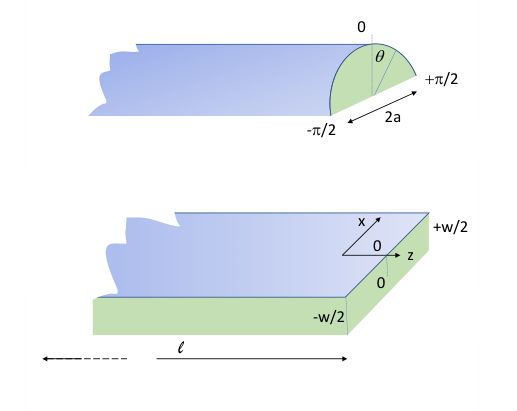
<figcaption class="paper-figure-caption"><b>Fig 1.</b> FIG. 2. One of the electrodes from the pair that confines mi- crowaves in the envisaged guides. Top: the cylindrical (half- electrode) case [17], which can be mapped onto the Cartesian (flat) case [16] (bottom). Metal in blue, dielectric in green.</figcaption>
</figure>
<figure class="paper-figure-card">
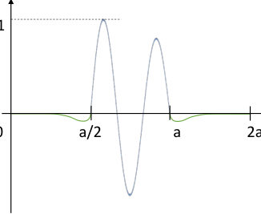
<figcaption class="paper-figure-caption"><b>Fig 2.</b> FIG. 3. Illustration of the mathematical extension of the gv(x) transverse function for a coaxial mode. Here, explic- itly we plot the m = 3 case with a = 2b. The green line can be such that extremities are ”ideally” flat around 0, with |gv(x)| ≪1 (see text).</figcaption>
</figure>
<figure class="paper-figure-card">
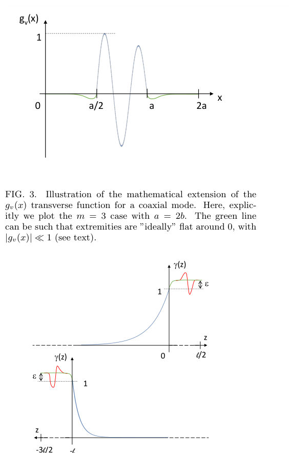
<figcaption class="paper-figure-caption"><b>Fig 3.</b> FIG. 4. Illustration of the mathematical extension of the function γ(z) [not to scale]. The two sides are in principle not symmetric, we simply require in the first place γ(−3/2ℓ) = γ(+ℓ/2) and all derivatives equal to 0 at these extremities. The simplest possibility is the green curve. However, one can as well produce a more involved pattern (schematically the red one), fulfilling a specific integral property (see text).</figcaption>
</figure>
</div>

<p><strong>Summary.</strong> This work develops a quantum theoretical framework to describe microwave signal propagation in waveguides by mapping classical transmission line theory onto quantum scattering matrices. Using a generalized flux formalism and Hodge decomposition, the authors classify wave dynamics into gradient and curl components. This provides a universal tool for analyzing quantum loads and is directly applicable to microwave-based quantum information transfer.</p>
<p><strong>Why it may be interesting.</strong> The rigorous mathematical framework connecting classical electromagnetism (waveguides) to quantum scattering theory provides powerful tools for modeling quantum information transfer in solid-state microwave circuits.</p>
<details>
<summary>Detailed structure</summary>
<p><strong>Main problem.</strong> The paper maps classical microwave transmission line theory onto a quantum scattering matrix description to analyze quantum loads.</p>
<p><strong>Main result.</strong> It establishes a universal theoretical framework that classifies traveling waves into gradient-type and curl-type charge-currents, shedding light on broken gauge symmetries in TE modes.</p>
<p><strong>Method.</strong> The authors use a generalized flux formalism and apply a Hodge-like decomposition to the charge-current vector living on the confining electrodes.</p>
<p><strong>Model / system.</strong> The system involves quantum signals traveling through microwave waveguides (Cartesian and cylindrical geometries) in a cryogenic environment, analyzed via input-output quantum optics theory.</p>
<p><strong>Key observables.</strong> The load is characterized by complex coefficients $Z_{	ext{load}}(\alpha)$ for each propagating mode $\alpha$.</p>
<p><strong>Important parameters / regimes.</strong> Waveguide geometries (Cartesian, cylindrical), mode types (TEM, TM, TE), and effective electrode width ($w_{	ext{eff}}$).</p>
<p><strong>Assumptions / limitations.</strong> The analysis extends beyond conventional TEM transport to include TM and TE modes, requiring the use of a generalized flux field.</p>
<p><strong>Figures summary.</strong> Figures schematically relate classical transmission lines to quantum scattering matrices and illustrate electrode geometries for different guides.</p>
<p><strong>Paper structure.</strong> The paper progresses from mapping classical theory to quantum scattering, deriving the charge-current vector via generalized flux, applying Hodge decomposition, and finally classifying wave types and analyzing modal parameters for various geometries.</p>
</details>
<details>
<summary>Abstract</summary>
<p>We report on the mapping of classical microwave transmission line theory onto the quantum scattering matrix description. By means of a generalized flux formalism a la Devoret, we derive a charge-current vector living on the confining electrodes, to which a Hodge-like decomposition is applied. The presented theory holds equally well for all types of waves traveling within Cartesian and cylindrical guide geometries (the usual Transverse Electric Magnetic, but also Transverse Magnetic and Transverse Electric ones). We then demonstrate how a generic load decomposes into a series of complex coefficients $Z_{load}(α)$, for each mode $α$ propagating along the line. This decomposition leads to a particular classification of traveling waves: gradient-type and curl-type charge-currents. This distinction shines a new light on a broken gauge symmetry exhibited by a class of Transverse Electric modes. Our results provide a universal theoretical framework, which finds a direct usage in microwave-based quantum information transfer.</p>
</details>
<p><sub><a href="#top">↑ back to top</a></sub></p>

<p><a id="paper-2609.21625"></a></p>
<h3 id="semiclassical-arrhenius-law-for-quantum-thermal-escape-rates"><a href="http://arxiv.org/abs/2609.21625v1">Semiclassical Arrhenius law for quantum-thermal escape rates</a></h3>
<p><strong>Authors:</strong> Luca Salasnich, Cesare Vianello<br>
<strong>Type:</strong> theory · <strong>Category:</strong> statistical mechanics · <strong>PDF:</strong> <a href="https://arxiv.org/pdf/2609.21625v1">https://arxiv.org/pdf/2609.21625v1</a><br>
<strong>Analysis basis:</strong> full PDF text, analyzed in chunks
<strong>Topic relevance:</strong> <code>Keldysh / 2PI / non-Gaussian methods</code> <strong>2/5</strong> · <code>methods for driven-dissipative</code> <strong>2/5</strong></p>
<div class="figure-strip-hint">↔ Scroll figures horizontally</div>
<div class="paper-figures-scroll">
<figure class="paper-figure-card">
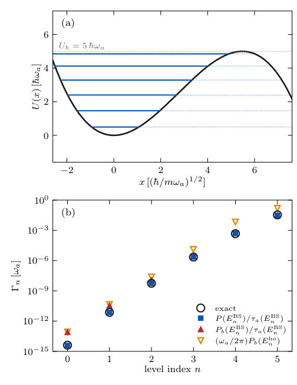
<figcaption class="paper-figure-caption"><b>Fig 1.</b> FIG. 1. (a) Cubic potential with Ub = 5 ℏωa. Horizon- tal lines mark the six exact quasibound levels En of Table I. (b) Partial decay rates Γn: exact (circles), uniform semi- classical P(EBS n )/τa(EBS n ) of Eq. (19) (squares), Hill-Wheeler Pb(EBS n )/τa(EBS n ) of Eq. (21) (filled triangles), and harmonic (ωa/2π)Pb(Eho n ) of Eq. (8) (open triangles). The uniform val- ues are almost indistinguishable from the exact ones on this scale. The filled triangles approach the exact widths mono- tonically as the barrier top is reached, showing the effect of the parabolic approximation alone; the open triangles do not, because the harmonic ladder adds an independent error that grows with n.</figcaption>
</figure>
<figure class="paper-figure-card">
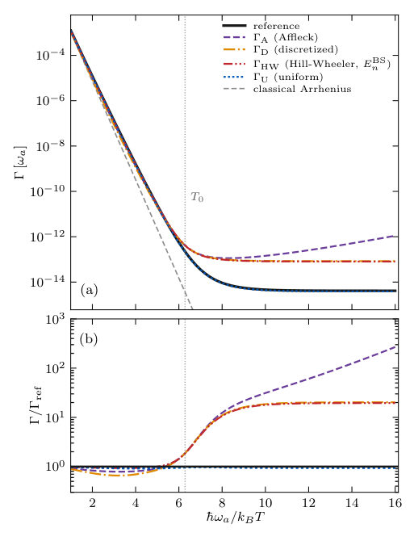
<figcaption class="paper-figure-caption"><b>Fig 2.</b> FIG. 2. (a) Quantum-thermal escape rate of the cubic po- tential with Ub = 5 ℏωa as a function of inverse temperature. Solid black: reference rate (1) obtained from the exact reso- nances of Table I and the above-barrier Kemble transmission. Dashed purple: Affleck’s formula (2). Dot-dashed yellow: dis- cretized formula (8), i.e. the Hill-Wheeler transmission eval- uated on the harmonic ladder Eho n . Dash-dot-dotted red: in- termediate formula (21), i.e. the Hill-Wheeler transmission on Bohr-Sommerfeld levels. Dotted blue: uniform formula (19), i.e. the Kemble transmission on Bohr-Sommerfeld levels. Comparing the last three curves separates the two sources of error in the discretized...</figcaption>
</figure>
</div>

<p><strong>Summary.</strong> This paper develops advanced semiclassical theories to accurately calculate the quantum-thermal escape rate from a metastable potential barrier. It resolves a known divergence in continuum rate calculations at low temperatures by incorporating the discrete nature of the quantum spectrum. The resulting uniform formula provides a highly accurate description of the rate across all temperature regimes.</p>
<p><strong>Why it may be interesting.</strong> This work is highly relevant to AMO physics and open quantum systems because calculating escape rates is fundamental to understanding tunneling and decay processes in quantum devices (e.g., Josephson junctions, molecular dynamics). The rigorous treatment of the low-temperature crossover is a key theoretical challenge.</p>
<details>
<summary>Detailed structure</summary>
<p><strong>Main problem.</strong> The paper addresses the calculation of the quantum-thermal escape rate from a metastable potential well, specifically resolving the divergence encountered when using continuum approximations at low temperatures.</p>
<p><strong>Main result.</strong> A uniform semiclassical formula is derived that remains accurate over eleven orders of magnitude, successfully recovering the standard WKB decay rate at zero temperature while maintaining physical consistency across temperature regimes.</p>
<p><strong>Method.</strong> The authors employ semiclassical methods, comparing continuum approximations (like Affleck's formula) with more rigorous approaches involving discrete quasi-bound states and uniform transmission probabilities derived from complex scaling techniques.</p>
<p><strong>Model / system.</strong> The model is a quantum particle in a one-dimensional potential $U(x)$ featuring a metastable well and a barrier. The analysis uses harmonic approximations for the well and parabolic approximations for the barrier, applied to potentials like cubic or quintic forms.</p>
<p><strong>Key observables.</strong> Escape rate ($\Gamma$), resonance widths ($\hbar\Gamma_n$), and the barrier height ($U_b$).</p>
<p><strong>Important parameters / regimes.</strong> Temperature ($T$) or inverse temperature ($eta$), well frequency ($\omega_a$), barrier frequency ($\omega_b$), and the crossover temperature ($T_0$).</p>
<p><strong>Assumptions / limitations.</strong> The primary assumption being tested is the validity of continuum vs. discrete treatments; the paper assumes the applicability of semiclassical quantization rules (Bohr-Sommerfeld) and complex scaling methods.</p>
<p><strong>Figures summary.</strong> The notes mention comparing rates derived from different formulas (uniform, discretized, Affleck's) and referencing tables comparing resonance positions and widths for potentials like the cubic case.</p>
<p><strong>Paper structure.</strong> The structure moves from establishing the general rate formula (resonance + continuum) to analyzing the failure of continuum treatments at low T, developing discrete and uniform semiclassical corrections, and finally benchmarking these results against exact complex scaling calculations.</p>
</details>
<details>
<summary>Abstract</summary>
<p>The quantum-thermal escape rate from a metastable well in the absence of dissipation is customarily written as a Boltzmann average of the Hill-Wheeler flux over a continuum of energies. However, this continuum treatment diverges exponentially at low temperature. The divergence originates in a mismatch between a quantum partition function and a classical flux integral; retaining the discrete nature of the quasibound spectrum removes it exactly, and the resulting semiclassical Arrhenius law is obtained in closed form on both sides of the crossover temperature. Evaluating a uniform Kemble transmission probability on Bohr-Sommerfeld levels further recovers the standard WKB decay rate of the lowest resonance at zero temperature. Benchmarked against the resonances of cubic and quintic potentials, obtained by complex scaling, this uniform semiclassical result stays within $9\%$ of the exact rate over eleven orders of magnitude.</p>
</details>
<p><sub><a href="#top">↑ back to top</a></sub></p>

<p><a id="paper-2609.21508"></a></p>
<h3 id="the-charge-dependent-hard-sphere-model-polycrystals-as-low-energy-configurations"><a href="http://arxiv.org/abs/2609.21508v1">The charge dependent hard-sphere model: Polycrystals as low-energy configurations</a></h3>
<p><strong>Authors:</strong> Leonard Kreutz, Timo Ziereis<br>
<strong>Type:</strong> theory · <strong>Category:</strong> statistical mechanics · <strong>PDF:</strong> <a href="https://arxiv.org/pdf/2609.21508v1">https://arxiv.org/pdf/2609.21508v1</a><br>
<strong>Analysis basis:</strong> full PDF text, analyzed in chunks
<strong>Topic relevance:</strong> <code>analog quantum simulation</code> <strong>2/5</strong> · <code>Frenkel-Kontorova</code> <strong>1/5</strong> · <code>Keldysh / 2PI / non-Gaussian methods</code> <strong>1/5</strong></p>
<div class="figure-strip-hint">↔ Scroll figures horizontally</div>
<div class="paper-figures-scroll">
<figure class="paper-figure-card">
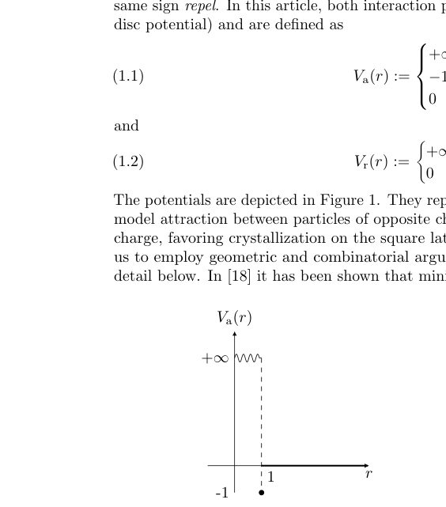
<figcaption class="paper-figure-caption"><b>Fig 1.</b> Figure 1. The interaction potentials: The attractive potential Va on the left and the repulsive potential Vr on the right.</figcaption>
</figure>
<figure class="paper-figure-card">
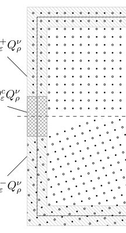
<figcaption class="paper-figure-caption"><b>Fig 2.</b> Figure 4. Schematic Illustration of a competitor X for the cell problem on Qν ρ in the definition of φ. Also, this shows an illustration of the boundary regions ∂± ε Qν ρ, ∂c εQν ρ, in which we assume X = Lε(z±) and X = ∅, respectively. Note that this is only for illustration purposes, i.e., the scaling factor between the lattice spacing and the boundary thickness does not match the definition.</figcaption>
</figure>
<figure class="paper-figure-card">
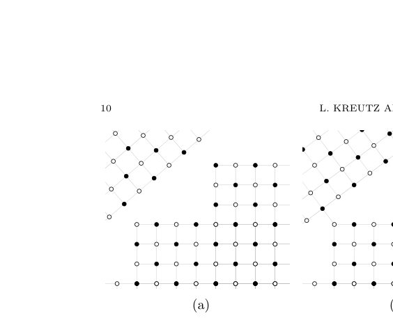
<figcaption class="paper-figure-caption"><b>Fig 3.</b> Figure 5. Different scenarios for optimal interfaces. Edges are depicted between points at distance 1. (a): Two lattices for which φ is equal to twice the surface energy between lattice and vacuum. (b): Two lattices for which φ is less than twice the energy between lattice and vacuum. (c): Two lattices for which the lower bound in Theorem 2.5(ii) is attained.</figcaption>
</figure>
<figure class="paper-figure-card">
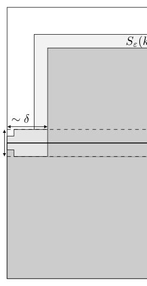
<figcaption class="paper-figure-caption"><b>Fig 4.</b> Figure 6. Illustration of the different regions in the definition of Y + ε . In the grey region, we set Y + ε = Xε. In the light gray strip Sε(kε) we have Y + ε = Xε = Lε(z+ ε ). In the grey region is (Rν 1,δ \ Qν rkε−1) \ (∂+ ε Qν ∪∂− ε Qν) we set Y + ε = ∅. Finally, in the white region we set Y + ε = Lε(z+ ε ). The dashed lines enclose Rν 1,δ.</figcaption>
</figure>
<figure class="paper-figure-card">
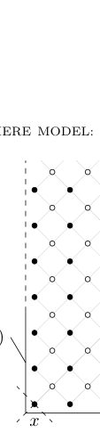
<figcaption class="paper-figure-caption"><b>Fig 5.</b> Figure 7. Schematic picture of a point x ∈X ∩∂+ 1 Qν T (y) with x /∈M +.</figcaption>
</figure>
</div>

<p><strong>Summary.</strong> This work analyzes how rigid polycrystalline structures form as the low-energy ground state in a model of interacting charged hard spheres. Using $\Gamma$-convergence, the authors derive a continuum theory showing that the energy concentrates at grain boundaries. The resulting surface energy is anisotropic and depends critically on the misorientation mismatch, providing a detailed theoretical description of solid-solid interfaces.</p>
<p><strong>Why it may be interesting.</strong> While focused on classical condensed matter, the rigorous mathematical machinery of $\Gamma$-convergence and the study of low-energy configurations in complex, constrained systems are highly relevant to understanding phase transitions and ground states in quantum many-body systems.</p>
<details>
<summary>Detailed structure</summary>
<p><strong>Main problem.</strong> The paper investigates the emergence of rigid polycrystalline structures as low-energy configurations in atomistic ionic particle systems.</p>
<p><strong>Main result.</strong> The limiting energy density at grain boundaries is anisotropic and depends on the relative misorientation and translation misfit, showing a 'brittle surface energy' due to the rigid potentials.</p>
<p><strong>Method.</strong> The analysis employs $\Gamma$-convergence to derive a continuum theory from the discrete atomistic energy functional, describing the system via piecewise constant fields encoding local orientation.</p>
<p><strong>Model / system.</strong> The system is an atomistic ionic particle model with charges $\pm 1$, governed by a pair-potential Hamiltonian involving hard-sphere interactions for both attraction (opposite charges) and repulsion (same charges).</p>
<p><strong>Key observables.</strong> Limiting energy density ($\phi$), surface energy, and the function $u_{\epsilon}$ describing local lattice orientation.</p>
<p><strong>Important parameters / regimes.</strong> The scaling parameter $\epsilon$ (related to $1/\sqrt{N}$), relative misorientation angle, and translation misfit vector.</p>
<p><strong>Assumptions / limitations.</strong> The analysis assumes that interpolating grain boundary layers are energetically unfavorable, leading to a 'brittle set-up' dictated by the rigid potentials.</p>
<p><strong>Figures summary.</strong> Figure 1 shows the attractive and repulsive potentials; Figure 2 illustrates a minimizer configuration; Figure 3 shows the local orientation function $u_{\epsilon}$; and Figure 4 schematically depicts boundary regions.</p>
<p><strong>Paper structure.</strong> The paper establishes the problem using the Hamiltonian, applies $\Gamma$-convergence to derive the continuum limit, proves key inequalities (Theorem 2.5) through complex energy estimations involving competitor constructions, and concludes by characterizing the anisotropic surface energy.</p>
</details>
<details>
<summary>Abstract</summary>
<p>We investigate the emergence of rigid polycrystalline structures in atomistic ionic particle systems as low-energy configurations. The interaction between particles of opposite charge is modeled by hard spheres that interact when they are tangential. The interaction between particles of same charge is modeled as a hard repulsion that forces a minimal distance between them. The atomistic energy is frame invariant, and no underlying reference lattice is assumed on the ionic configurations. The asymptotic behavior of configurations with finite surface energy scaling is identified by means of $Γ$-convergence. The related continuum theory is described by piecewise constant fields that encode the local orientation of the configuration. The limiting energy is local and concentrates at grain boundaries, which correspond to the boundaries of the regions where the underlying configuration has a constant orientation. The limiting energy density is anisotropic and depends on the relative misorientation of the two grains, their translation misfit, and the normal to their interface. Furthermore, we perform a fine analysis of surface energies for solid-solid and solid-vacuum phase transitions and determine energetically favorable orientation mismatches. This relies on a structure result for our grain boundaries, which shows that, due to the rigid setup, interpolating layers near the grain interface are energetically not favorable.</p>
</details>
<p><sub><a href="#top">↑ back to top</a></sub></p>

<p><a id="paper-2609.21438"></a></p>
<h3 id="entanglement-inducing-quantum-markov-processes"><a href="http://arxiv.org/abs/2609.21438v1">Entanglement-Inducing Quantum Markov Processes</a></h3>
<p><strong>Authors:</strong> J. Fransson, A. P. Sowa<br>
<strong>Type:</strong> theory · <strong>Category:</strong> other · <strong>PDF:</strong> <a href="https://arxiv.org/pdf/2609.21438v1">https://arxiv.org/pdf/2609.21438v1</a><br>
<strong>Analysis basis:</strong> full PDF text, analyzed in chunks
<strong>Topic relevance:</strong> <code>analog quantum simulation</code> <strong>2/5</strong> · <code>Keldysh / 2PI / non-Gaussian methods</code> <strong>1/5</strong></p>
<div class="figure-strip-hint">↔ Scroll figures horizontally</div>
<div class="paper-figures-scroll">
<figure class="paper-figure-card">
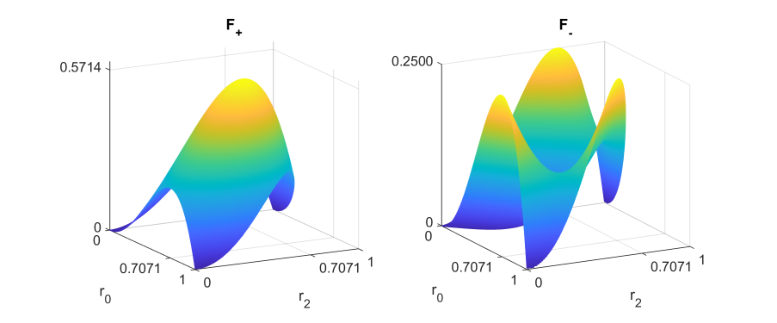
<figcaption class="paper-figure-caption"><b>Fig 1.</b> FIG. 1. Functions F+ = F+(r0,r2) and F−= F−(r0,r2). Both graphs are symmetric with respect to the interchange r0 ↔r2. F+ attains the maximum where r0 = r2 = √</figcaption>
</figure>
</div>

<p><strong>Summary.</strong> This paper introduces the Schrödinger-Dirichlet equation (SDE) to model interacting bosons, proposing a novel, non-dissipative quantum Markov process capable of generating entanglement. The mathematical analysis is highly technical, relying on harmonic analysis on the group of positive rationals and analyzing the evolution of quantum states in Fock space.</p>
<p><strong>Why it may be interesting.</strong> The work bridges quantum many-body physics (interacting bosons) with advanced mathematical structures (harmonic analysis on $\mathbb{Q}^+$), providing a non-standard, non-dissipative framework for studying quantum dynamics and entanglement.</p>
<details>
<summary>Detailed structure</summary>
<p><strong>Main problem.</strong> The paper develops a mathematical framework to analyze nonlinear, nonlocal quantum dynamics for interacting bosons, specifically focusing on the generation of entanglement from initially separable states.</p>
<p><strong>Main result.</strong> The proposed Schrödinger-Dirichlet equation (SDE) generates entanglement, and the analysis utilizes harmonic analysis on the multiplicative group of positive rationals to characterize the system's evolution.</p>
<p><strong>Method.</strong> The analysis combines quantum field theory techniques (Fock space, generalized bosons) with advanced mathematical tools, including harmonic analysis on $\mathbb{Q}^+$ and the study of nonlinear differential equations for probability distributions.</p>
<p><strong>Model / system.</strong> The core model is a system of interacting bosons on an array of sites, governed by the nonlinear Schrödinger-Dirichlet equation (SDE). The analysis is mathematically grounded in the structure of the bosonic Fock space and its representation via the group $\mathbb{Q}^+$.</p>
<p><strong>Key observables.</strong> Entanglement generation, entropy $E(P)$, expectation values of local number operators $\langle \hat{N}_q 
angle$, and the functional $F = \|\psi \odot \psi\|^2$.</p>
<p><strong>Important parameters / regimes.</strong> The structure of the interaction (nonlinear, nonlocal), the nature of the underlying group ($\mathbb{Q}^+$), and the time evolution parameter $t$.</p>
<p><strong>Assumptions / limitations.</strong> The analysis assumes the existence of a generalized-bosonic creation operator and relies on harmonic analysis techniques applicable to the multiplicative group of positive rationals.</p>
<p><strong>Figures summary.</strong> Not specified, but the notes refer to tables summarizing Critical Points (CPs) for two-particle states and figures illustrating the behavior of functionals $F_+$ and $F_-$.</p>
<p><strong>Paper structure.</strong> The paper progresses from analyzing classical Markov processes (discrete and continuous time) to introducing the quantum mechanical model for bosonic sites indexed by primes, culminating in the analysis of entanglement-inducing functionals.</p>
</details>
<details>
<summary>Abstract</summary>
<p>We introduce a new model for a system of interacting bosons placed in an array of sites. At its core is a nonlinear, nonlocal evolution equation, which we have dubbed the Schrödinger-Dirichlet equation. The construction is closely related to the Bose-Hubbard model and to a specific type of generalized bosons. In contrast to conventional mean-field closures, the resulting nonlinear dynamics need not preserve product structure and can generate entanglement from initially separable states. The relevant methods of analysis are based on harmonic analysis for the multiplicative group of positive rationals.</p>
</details>
<p><sub><a href="#top">↑ back to top</a></sub></p>

<p><a id="paper-2609.21579"></a></p>
<h3 id="global-entanglement-quantification-via-classical-shadows"><a href="http://arxiv.org/abs/2609.21579v1">Global Entanglement Quantification via Classical Shadows</a></h3>
<p><strong>Authors:</strong> João P. Engster, Eduardo I. Duzzioni<br>
<strong>Type:</strong> theory · <strong>Category:</strong> quantum information and computing · <strong>PDF:</strong> <a href="https://arxiv.org/pdf/2609.21579v1">https://arxiv.org/pdf/2609.21579v1</a><br>
<strong>Analysis basis:</strong> full PDF text, analyzed in chunks
<strong>Topic relevance:</strong> <code>quantum measurements</code> <strong>2/5</strong> · <code>analog quantum simulation</code> <strong>1/5</strong></p>
<div class="figure-strip-hint">↔ Scroll figures horizontally</div>
<div class="paper-figures-scroll">
<figure class="paper-figure-card">
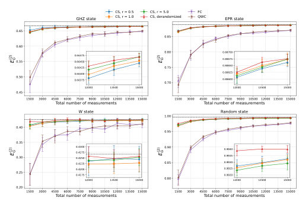
<figcaption class="paper-figure-caption"><b>Fig 1.</b> FIG. 1. E(2) G as a function of the total number of measure- ments for 10-qubit GHZ, EPR, W, and random states, re- quiring the estimation of 675 Pauli words. The results show a faster convergence to the exact entanglement value (dotted line) for shadow estimations, and the insets highlight how, even with different values of r, the randomized shadow esti- mations perform as well as the derandomized shadow proto- col. The uncertainty bars represent the standard deviation over ten independent runs.</figcaption>
</figure>
<figure class="paper-figure-card">
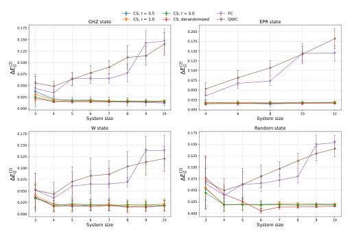
<figcaption class="paper-figure-caption"><b>Fig 2.</b> FIG. 3. Absolute difference between the exact and estimated values of E(2) G for different system sizes, considering GHZ, EPR, W, and Haar random states. When the system size grows, the absolute error estimated with grouping methods also grows, while the shadow approach is able to maintain the errors relatively low.</figcaption>
</figure>
<figure class="paper-figure-card">
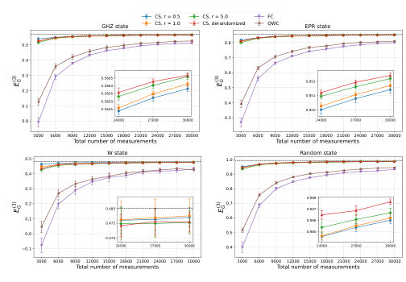
<figcaption class="paper-figure-caption"><b>Fig 3.</b> FIG. 2. E(3) G as a function of the total number of measure- ments for 10-qubit GHZ, EPR, W, and random states. The results strengthen the observations in Fig 1, tackling a signif- icantly harder estimation task, involving 7560 observables to characterize E(3) G . The uncertainty bars represent the stan- dard deviation over ten independent runs.</figcaption>
</figure>
</div>

<p><strong>Summary.</strong> This paper introduces the use of the classical shadows technique to estimate the generalized global entanglement, $E_G^{(n)}$, which quantifies multipartite entanglement. By leveraging classical shadows, the authors overcome the severe measurement overhead associated with directly estimating all necessary Pauli observables. The results demonstrate that this method offers a clear, resource-efficient advantage over traditional estimation techniques for characterizing entanglement in large quantum systems.</p>
<p><strong>Why it may be interesting.</strong> This work provides a crucial resource-efficient tool for characterizing complex quantum correlations, which is vital for benchmarking quantum hardware and understanding entanglement scaling in many-body quantum systems.</p>
<details>
<summary>Detailed structure</summary>
<p><strong>Main problem.</strong> The core challenge is quantifying multipartite entanglement, a difficult task for which no universal measure exists.</p>
<p><strong>Main result.</strong> The classical shadows technique provides a significant and measurable advantage over direct estimation methods for quantifying global entanglement, especially for large systems with limited measurement resources.</p>
<p><strong>Method.</strong> The authors propose using the classical shadows protocol to estimate the expectation values of Pauli observables required for the generalized global entanglement measure, $E_G^{(n)}$.</p>
<p><strong>Model / system.</strong> The study analyzes general quantum states ($
ho$) across $n$-qubit partitions, simulating results for well-known entangled states like GHZ, W, and EPR states, as well as random states.</p>
<p><strong>Key observables.</strong> Generalized global entanglement ($E_G^{(n)}$), linear entropy of reduced density matrices ($   ext{SL}(
ho_{\ell})$), and expectation values of Pauli observables.</p>
<p><strong>Important parameters / regimes.</strong> The analysis explores scaling with system size ($N$), the number of qubits in the partition ($n$), and measurement resource ratios ($r$).</p>
<p><strong>Assumptions / limitations.</strong> The classical shadows estimator is only unbiased in the asymptotic limit, and direct estimation suffers from severe scaling issues.</p>
<p><strong>Figures summary.</strong> Figures illustrate the faster convergence of shadow estimations towards the exact entanglement value compared to grouping methods, particularly as system size or required observables increase.</p>
<p><strong>Paper structure.</strong> The paper introduces the entanglement measure, details the classical shadows technique for estimating required observables, compares its performance against grouping methods (QWC, FC) through simulations on various entangled states, and concludes with a demonstration of its feasibility in resource-limited regimes.</p>
</details>
<details>
<summary>Abstract</summary>
<p>Detecting and characterizing quantum correlations are tasks of great relevance in quantum information. More specifically, quantifying the amount of multipartite entanglement is a known difficult task, even for pure states. To this end, several entanglement measures have been proposed, although there is currently no universal manner to do so. In this work, we propose the classical shadows technique to measure the generalized global entanglement introduced in Phys. Rev. A 74, 022314. This particular multipartite entanglement quantifier $E_G^{(n)}$ relies on the linear entropies of all $n$-qubit partitions of a state. As the linear entropy can be written in terms of a complete set of observables of the subsystem, we employ classical shadows to estimate many observables with fewer measurements. We simulate the quantification of $E_G^{(n)}$ for well-known entangled states and for random states, comparing shadow estimations and grouping techniques. Our results show a clear advantage of classical shadows over direct estimation approaches, indicating that it can be a useful tool to quantify entanglement without the need to reconstruct the density operator of the whole system.</p>
</details>
<p><sub><a href="#top">↑ back to top</a></sub></p>

<p><a id="paper-2609.21414"></a></p>
<h3 id="a-functorial-theory-of-defects-in-abelian-chern-simons-theory"><a href="http://arxiv.org/abs/2609.21414v1">A Functorial Theory of Defects in Abelian Chern-Simons Theory</a></h3>
<p><strong>Authors:</strong> Daniel Galviz<br>
<strong>Type:</strong> theory · <strong>Category:</strong> strongly correlated electrons · <strong>PDF:</strong> <a href="https://arxiv.org/pdf/2609.21414v1">https://arxiv.org/pdf/2609.21414v1</a><br>
<strong>Analysis basis:</strong> full PDF text, analyzed in chunks
<strong>Topic relevance:</strong> <code>analog quantum simulation</code> <strong>2/5</strong></p>
<div class="figure-strip-hint">↔ Scroll figures horizontally</div>
<div class="paper-figures-scroll">
<figure class="paper-figure-card">
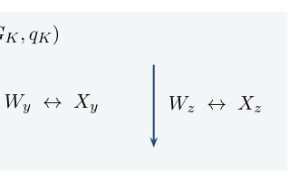
<figcaption class="paper-figure-caption"><b>Fig 1.</b> Figure 1. Bulk Wilson sectors. A charge modulo monopole screening labels both a topological Wilson line Wx and a simple object Xx of CK. The arrows specify line orientations; the shaded region denotes the bulk phase.</figcaption>
</figure>
<figure class="paper-figure-card">
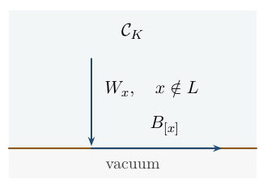
<figcaption class="paper-figure-caption"><b>Fig 2.</b> Figure 2. A Lagrangian boundary. (a) A condensed charge ℓ∈L can end in the boundary vacuum. (b) A charge x /∈L induces a nontrivial boundary line B[x], indexed by [x] ∈GK/L; it does not disappear into the boundary vacuum.</figcaption>
</figure>
<figure class="paper-figure-card">
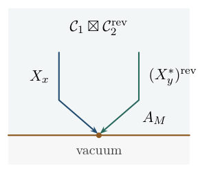
<figcaption class="paper-figure-caption"><b>Fig 3.</b> Figure 3. Folding a fully gapped domain wall. Transmission of x to y is expressed by absorption of Xx ⊠(X∗ y)rev into AM in the folded bulk. Here M uses transmission coordinates (x, y); the corresponding simple-object degree in the folded category is (x, −y). The superscript rev reverses the braiding, while X∗ y accounts for the outgoing-line orientation.</figcaption>
</figure>
<figure class="paper-figure-card">
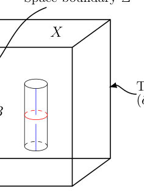
<figcaption class="paper-figure-caption"><b>Fig 4.</b> Figure 4. A 3-alterfold with time boundary. Here X is an oriented compact 3-manifold with boundary, and Σ ⊂X is an embedded oriented surface meeting ∂X transversely. The surface Σ separates X \ Σ into connected components colored by A and B. The separating surface Σ is the space boundary, while the pair (∂X, ∂Σ) is the time boundary. The interior of the tube is colored by A, and the exterior is colored by B; the tube carries additional Alterfold data, that is, the black strings indicate the boundary of the torus, the red circle denotes the Kirby color and the blue strand denotes an object label in the center sector.</figcaption>
</figure>
<figure class="paper-figure-card">
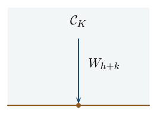
<figcaption class="paper-figure-caption"><b>Fig 5.</b> Figure 5. Fusion of condensed endpoints in chosen homogeneous bases: εhεk = µ(h, k)εh+k. The left panel denotes the ordered fusion of two endpoint insertions, including fusion of their incident Wilson lines. The coefficient µ(h, k) is a basis-dependent fusion amplitude.</figcaption>
</figure>
</div>

<p><strong>Summary.</strong> This paper develops a comprehensive, functorial mathematical theory for Abelian Chern-Simons field theories, treating them as Topological Quantum Field Theories (TQFTs). It classifies the theory and its defects using a mathematical invariant called the finite quadratic module. This work provides a rigorous framework for understanding topological order in condensed matter systems.</p>
<p><strong>Why it may be interesting.</strong> The deep connection between Chern-Simons theory, topological order, and categorical structures provides powerful mathematical tools for understanding the ground state degeneracy and robust properties of strongly correlated electron systems.</p>
<details>
<summary>Detailed structure</summary>
<p><strong>Main problem.</strong> To provide a unified, functorial description of Abelian Chern-Simons theories, organizing previously separate aspects like closed-manifold partition functions, BF theory, Turaev-Viro realizations, symmetries, and defect structures.</p>
<p><strong>Main result.</strong> The theory is rigorously classified by the finite quadratic module $(	ext{GK}, q_K)$, which governs the bulk theory, defects, and symmetries. The framework successfully relates defect structures to categorical data, providing a concrete model for topological orders.</p>
<p><strong>Method.</strong> The authors utilize the framework of Categorical TQFTs, employing the Alterfold construction and analyzing the theory via its classification invariant, the finite quadratic module.</p>
<p><strong>Model / system.</strong> The primary model is Abelian Chern-Simons theory, which serves as an effective topological field theory for topological phases of matter, such as those found in fractional quantum Hall states.</p>
<p><strong>Key observables.</strong> The theory is governed by the invariant $(	ext{GK}, q_K)$; defects are classified by specific categorical data within the associated pointed modular category $  ext{C}( ext{GK}, q_K)$.</p>
<p><strong>Important parameters / regimes.</strong> The classification depends on the lattice $ ext{GK}$ and the quadratic form $q_K$.</p>
<p><strong>Assumptions / limitations.</strong> The analysis relies on establishing functorial relationships between different mathematical realizations (e.g., Turaev-Viro vs. Alterfold) and assumes the validity of the categorical framework for defect extension.</p>
<p><strong>Paper structure.</strong> The paper progresses by first establishing the functorial TQFT structure using the quadratic module invariant, then detailing the classification of defects (boundaries, domain walls) via categorical theorems, and finally comparing this structure with known lattice models (like the toric code) and addressing dualities.</p>
</details>
<details>
<summary>Abstract</summary>
<p>Recent work has constructed Abelian Chern-Simons theories as categorical TQFTs, allowing us to naturally incorporate categorical defects and construct defect extensions of Abelian Chern-Simons TQFTs. We first identify the Turaev-Viro realizations of Abelian Chern-Simons theory in the center and doubled pointed modular cases, clarifying the distinction between single bulk realizations and canonical doubled ones. Alternatively, the Alterfold construction supplies the associated topological boundaries, domain walls, and condensation sectors, establishing an explicit Alterfold/Chern-Simons dictionary. We show that the finite quadratic module is the invariant controlling the bulk theory, its topological symmetries, orientation-reversal invariance, and defects. We further show that multicomponent Abelian BF theory arises as the extended TQFT of an off-diagonal Abelian Chern-Simons theory, placing it naturally within the same extended framework. Finally, we demonstrate that recently proposed Abelian Chern-Simons dualities do not define a genuine TQFT duality. These results provide a concrete model for defects in Abelian topological orders and suggest a route toward the non-Abelian case.</p>
</details>
<p><sub><a href="#top">↑ back to top</a></sub></p>

<p><a id="paper-2609.21376"></a></p>
<h3 id="denser-planar-color-codes"><a href="http://arxiv.org/abs/2609.21376v1">Denser Planar Color Codes</a></h3>
<p><strong>Authors:</strong> Noah Shutty<br>
<strong>Type:</strong> theory · <strong>Category:</strong> quantum information and computing · <strong>PDF:</strong> <a href="https://arxiv.org/pdf/2609.21376v1">https://arxiv.org/pdf/2609.21376v1</a><br>
<strong>Analysis basis:</strong> full PDF text, analyzed in chunks
<strong>Topic relevance:</strong> <code>QC/QI experiment</code> <strong>2/5</strong></p>
<div class="figure-strip-hint">↔ Scroll figures horizontally</div>
<div class="paper-figures-scroll">
<figure class="paper-figure-card">
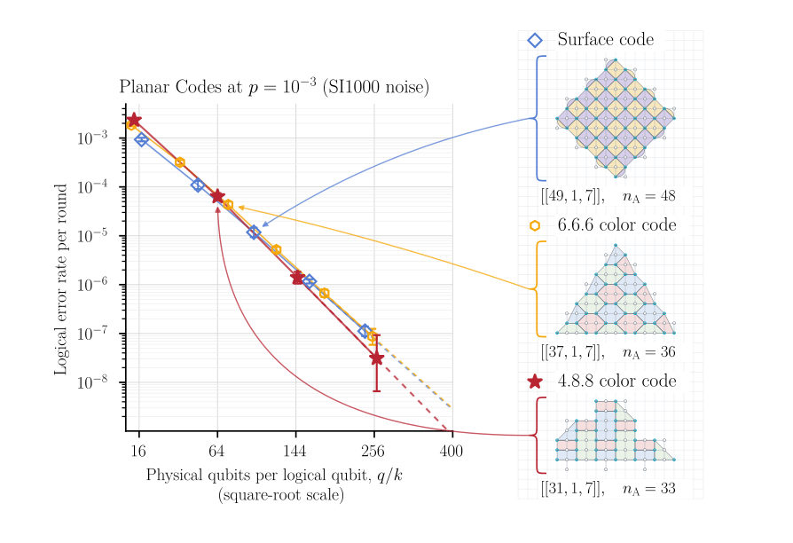
<figcaption class="paper-figure-caption"><b>Fig 1.</b> Figure 1: Denser planar quantum memories. Left: equally weighted X/Z memory performance at p = 10−3 under SI1000 noise with native CZ gates. Error bars represent 95% confidence intervals. Dashed lines extrapolate log ℓlinearly in p</figcaption>
</figure>
<figure class="paper-figure-card">
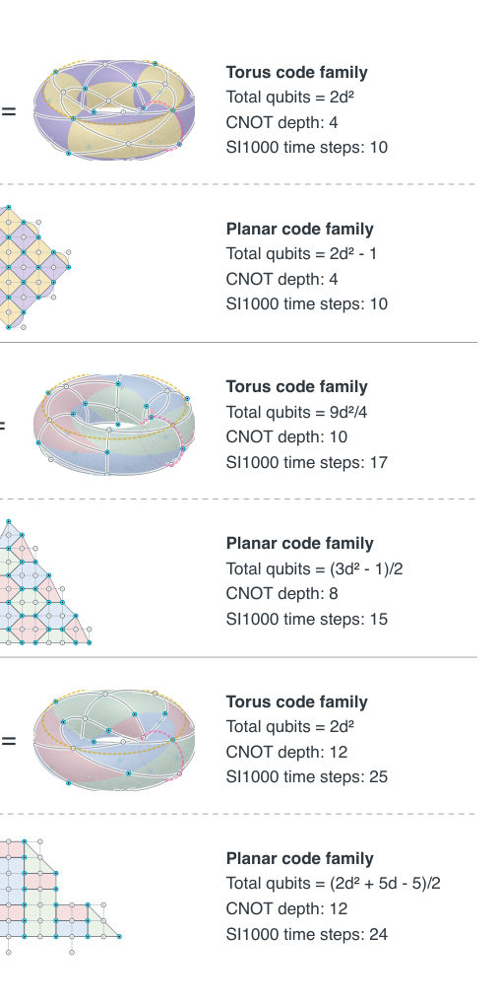
<figcaption class="paper-figure-caption"><b>Fig 2.</b> Figure 2: From stabilizer tilings to finite torus and planar codes.</figcaption>
</figure>
<figure class="paper-figure-card">
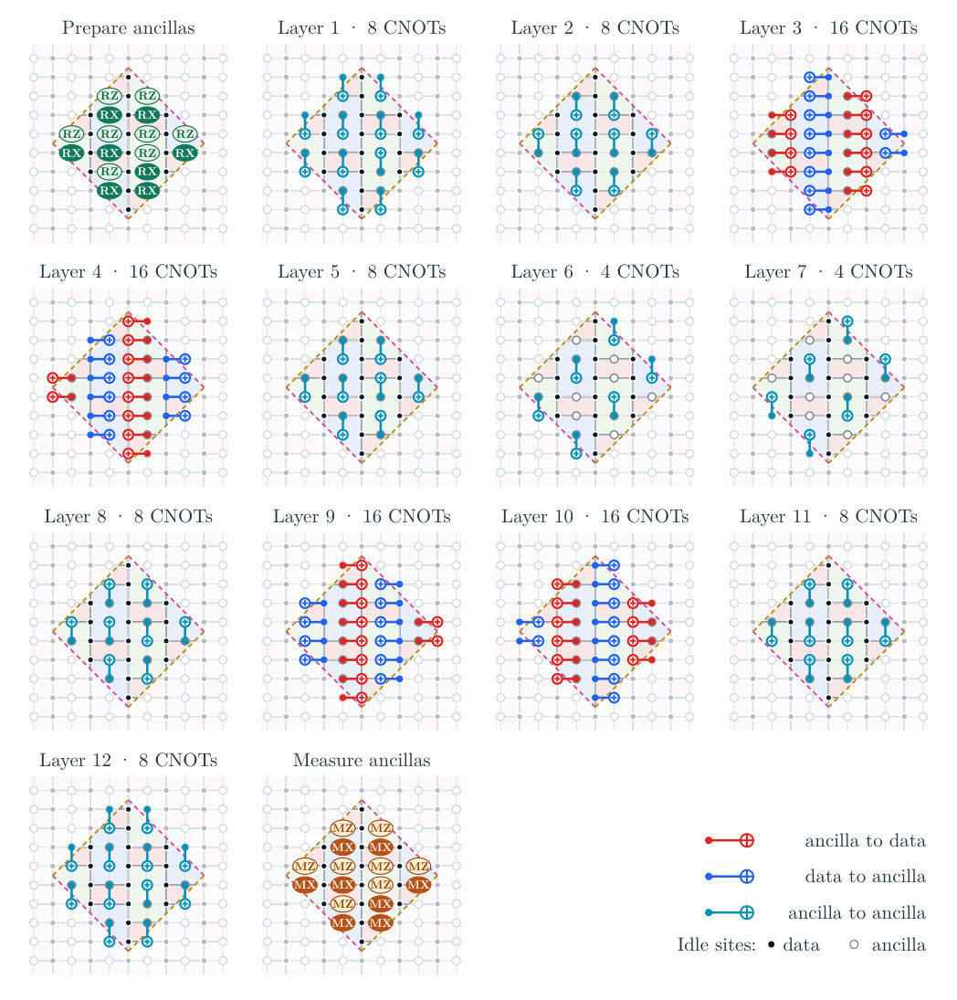
<figcaption class="paper-figure-caption"><b>Fig 3.</b> Figure 3: Complete CNOT cycle for the 4.8.8 color code on a torus: preparation, twelve CNOT layers, and measurement, read left to right and then top to bottom. The cycle repeats unchanged each round, without forward–backward alternation. Matching dashed seams are identified. Gates crossing the periodic boundary are drawn twice. RX/MX are implemented via a Hadamard combined with RZ/MZ. Long connections in the linked viewer denote periodic wraparound. Open a d = 8 torus superdense 4.8.8 color code circuit in Crumble.</figcaption>
</figure>
<figure class="paper-figure-card">
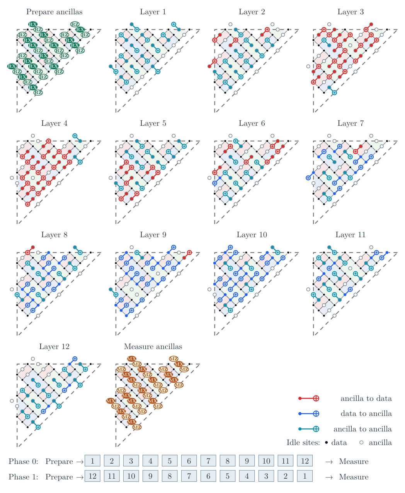
<figcaption class="paper-figure-caption"><b>Fig 4.</b> Figure 4: Complete CNOT cycle at d = 7 (31 data and 33 ancillas, 195 CNOTs per cycle). Read preparation, layers L1–L12, and measurement left to right and then top to bottom for phase zero. Phase one reverses the CNOT-layer order, not the control–target directions. Both phases use the same preparation and measurement bases and extract both X and Z checks. Open the triangular superdense 4.8.8 color code circuit in Crumble.</figcaption>
</figure>
<figure class="paper-figure-card">
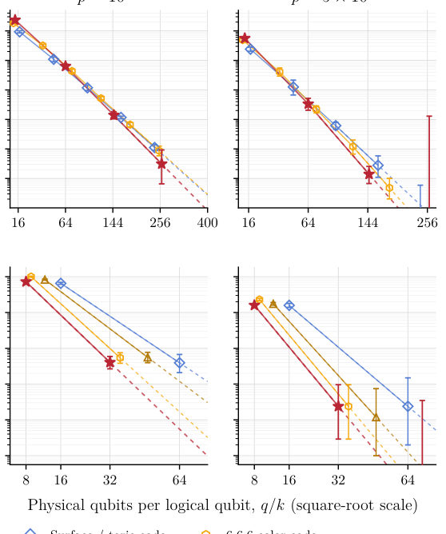
<figcaption class="paper-figure-caption"><b>Fig 5.</b> Figure 5: Comparison of quantum memories under SI1000 noise with native CZ gates, at p = 10−3 (left) and p = 5 × 10−4</figcaption>
</figure>
</div>

<p><strong>Summary.</strong> This paper analyzes the 4.8.8 color code as a viable quantum memory candidate for superconducting quantum processors. By optimizing its circuit layout and utilizing periodic superdense circuits, the authors demonstrate favorable qubit scaling compared to established codes like the surface code. The work provides detailed circuit-level simulations showing the code's robustness at plausible noise levels.</p>
<p><strong>Why it may be interesting.</strong> The detailed analysis of resource scaling and circuit depth for topological codes is highly relevant for designing fault-tolerant quantum computation architectures.</p>
<details>
<summary>Detailed structure</summary>
<p><strong>Main problem.</strong> The paper aims to improve quantum memory performance by comparing different topological quantum error-correcting codes and optimizing their circuit implementation on superconducting hardware.</p>
<p><strong>Main result.</strong> The 4.8.8 color code, when optimized with a brickwork layout and periodic circuits, is shown to be a competitive quantum memory, exhibiting favorable qubit scaling compared to other codes at the same distance.</p>
<p><strong>Method.</strong> The authors analyze circuit structures, construct periodic superdense circuits using CNOT layers, and compare qubit overheads and circuit depths for various color codes.</p>
<p><strong>Model / system.</strong> The study focuses on implementing topological quantum error-correcting codes (like 4.8.8 color codes) on the square lattice, modeled for superconducting quantum processors with nearest-neighbor gates.</p>
<p><strong>Key observables.</strong> Qubit count ($q$), circuit depth (CNOT layers), logical error rate ($\ell_F$), and physical noise scaling ($p$).</p>
<p><strong>Important parameters / regimes.</strong> Code distance ($d$), physical noise rate ($p=10^{-3}$), and the specific gate set (SI1000).</p>
<p><strong>Assumptions / limitations.</strong> The analysis assumes the use of Tesseract decoding and specific circuit optimizations (brickwork layout, superdense extraction) for favorable noise scaling.</p>
<p><strong>Figures summary.</strong> Figures compare X/Z memory performance at low noise, show qubit counts for different tilings, and illustrate the spatial repeat structure of the torus circuit.</p>
<p><strong>Paper structure.</strong> The paper progresses by defining the 4.8.8 code on a square lattice, detailing the periodic superdense circuit construction, comparing its resource overheads against triangular and surface codes, and analyzing circuit-level noise scaling.</p>
</details>
<details>
<summary>Abstract</summary>
<p>We consider the 4.8.8 color code in a brickwork layout on the square lattice with nearest-neighbor gates. We identify periodic superdense circuits with twelve CNOT layers that appear to preserve the full distance of these codes. Including ancillas, the family uses $q=(2d^2+5d-5)/2$ physical qubits for distance $d$: asymptotically $2/3$ as many as the triangular 6.6.6 color code and $1/2$ as many as the rotated surface code at the same code distance. Circuit-level simulations targeting superconducting architectures demonstrate favorable scaling of 4.8.8 color codes at plausible physical noise rates, including both for planar codes and their toroidal cousins under periodic boundary conditions.</p>
</details>
<p><sub><a href="#top">↑ back to top</a></sub></p>

<p><a id="paper-2609.21031"></a></p>
<h3 id="functional-renormalization-for-random-matrix-theory-the-relational-background-field-method"><a href="http://arxiv.org/abs/2609.21031v1">Functional Renormalization for Random Matrix Theory: The relational background field method</a></h3>
<p><strong>Authors:</strong> Vincent Lahoche, Dine Ousmane Samary<br>
<strong>Type:</strong> theory · <strong>Category:</strong> statistical mechanics · <strong>PDF:</strong> <a href="https://arxiv.org/pdf/2609.21031v1">https://arxiv.org/pdf/2609.21031v1</a><br>
<strong>Analysis basis:</strong> full PDF text, analyzed in chunks
<strong>Topic relevance:</strong> <code>Keldysh / 2PI / non-Gaussian methods</code> <strong>2/5</strong></p>
<div class="figure-strip-hint">↔ Scroll figures horizontally</div>
<div class="paper-figures-scroll">
<figure class="paper-figure-card">
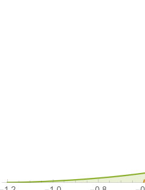
<figcaption class="paper-figure-caption"><b>Fig 1.</b> Figure 2.1. Profile of the distribution µ−βM2(x) for β = 0.15 and a4 = 1 (blue curve), a4 = 0 (yellow curve), a4 = −1/12 (green curve).</figcaption>
</figure>
<figure class="paper-figure-card">
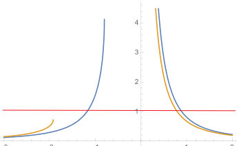
<figcaption class="paper-figure-caption"><b>Fig 2.</b> Figure 2.2. On the left: In blue, typical behavior of −g′ −βM2(z) for β = 1/5 and a4 = 1. In yellow, the corresponding distribution µ−βM4(x). The equation −g′ −βM2(w∗) = 1 has a solution on both the negative and positive sides, beyond the boundaries of µ−βM4(x). On the right: Behavior of −g′ −βM2(z) at the critical point a4 = −1/12, for β = 0.1 (blue curve) and β = 0.24 (yellow curve). There is no longer a solution to the equation −g′ −βM2(w∗) = 1 on the left in the second case.</figcaption>
</figure>
<figure class="paper-figure-card">
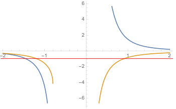
<figcaption class="paper-figure-caption"><b>Fig 3.</b> Figure 2.3. On the left: Typical behavior of the second derivative g′′ −βM2(z) (in blue) versus the first de- rivative (in yellow), outside the critical domain (a4 = 1, β = 1/5). On the right: Behavior of the same functions at the critical point for β = 0.1.</figcaption>
</figure>
<figure class="paper-figure-card">
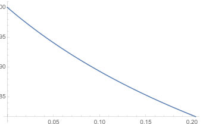
<figcaption class="paper-figure-caption"><b>Fig 4.</b> Figure 2.4. On the left: behavior of w−(β) (blue curve) and −8β (yellow curve). On the right: behavior of w+(β).</figcaption>
</figure>
<figure class="paper-figure-card">
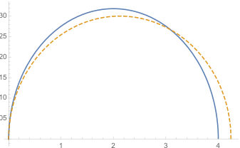
<figcaption class="paper-figure-caption"><b>Fig 5.</b> Figure 2.8. Left: behavior of the canonical dimension for a pure Wigner law (β = 0, in blue) and in the case where the matrix M is critical (a4 = −1/12, β = 0.2, in dashed yellow). Right: the corresponding generalized moment distributions in the limit N →∞.</figcaption>
</figure>
</div>

<p><strong>Summary.</strong> This paper introduces a novel Renormalization Group approach for random matrix models used to study quantum gravity. By employing a partial matrix-valued intermediate field in the large-N limit, the authors construct a symmetry-preserving RG flow. This leads to a well-defined continuum limit exhibiting a critical fixed point whose exponent matches known results from double-scaling theory.</p>
<p><strong>Why it may be interesting.</strong> While focused on quantum gravity, the rigorous application of RG techniques, especially the background-field method, provides advanced theoretical tools for analyzing critical phenomena and continuum limits in complex many-body systems, which has parallels in strongly correlated electron models.</p>
<details>
<summary>Detailed structure</summary>
<p><strong>Main problem.</strong> The primary challenge is developing a reliable Renormalization Group (RG) flow for discrete gravity models that successfully preserves the underlying symmetry group, such as U(N) or O(N).</p>
<p><strong>Main result.</strong> The authors construct a relational RG flow that preserves symmetry and yields an infrared theory described by a 3D non-local Euclidean field theory with a non-trivial Wilson-Fisher-like fixed point.</p>
<p><strong>Method.</strong> The method involves introducing a partial matrix-valued intermediate field and utilizing the large-N limit, where measure concentration allows this field to act as a self-consistent background field.</p>
<p><strong>Model / system.</strong> The study focuses on random matrix models, which are used to model the random geometry of two-dimensional quantum Euclidean spacetime. The analysis relates these models to discrete gravity partition functions.</p>
<p><strong>Key observables.</strong> Critical exponents, the Wilson-Fisher fixed point structure, and the double-scaling exponent.</p>
<p><strong>Important parameters / regimes.</strong> The large-$N$ limit, the continuum limit, and the coupling constants defining the random matrix interactions.</p>
<p><strong>Assumptions / limitations.</strong> The approach relies on the large-$N$ limit to justify the background field approximation, which is necessary to maintain symmetry and define a scale.</p>
<p><strong>Figures summary.</strong> Figure 1.1 illustrates the eigenvalue distribution approaching the Wigner semicircle in the large-N limit, and Figure 1.2 shows the duality between random matrix Feynman graphs and surface triangulations.</p>
<p><strong>Paper structure.</strong> The paper introduces the symmetry-preserving RG challenge, develops the novel background-field approach using the intermediate field, derives the resulting continuum theory, and concludes by discussing extensions to other discrete gravity models.</p>
</details>
<details>
<summary>Abstract</summary>
<p>The construction of a reliable renormalization group (RG) flow for discrete gravity models that preserves their underlying symmetry group, typically $U(N)$ or $O(N)$, remains an open problem. For random matrix models, which are the focus of this paper, this symmetry is intrinsically tied to the interactions encoding the random geometry of two-dimensional quantum Euclidean spacetime. We develop a novel approach based on the introduction of a partial matrix-valued intermediate field. In the large-$N$ limit, measure concentration strongly suppresses fluctuations of its singular values, allowing it to play the role of a self-consistent background field. This provides the basis for a relational RG in which the notion of scale is dynamically induced by the effective Gaussian measure in the basis where the intermediate field is diagonal. Our construction preserves the symmetry of the original model and admits a well-defined continuum limit. We show that the resulting infrared theory is described by a three-dimensional non-local Euclidean field theory with a non-trivial Wilson-Fisher-like fixed point and a single relevant direction. Remarkably, the associated critical exponent exactly matches the standard double-scaling exponent. We finally discuss extensions of the background-field approach to other discrete gravity models, such as random tensor models, and to different symmetry groups, as well as connections with more formal RG frameworks and information geometry.</p>
</details>
<p><sub><a href="#top">↑ back to top</a></sub></p>

<p><a id="paper-2609.21875"></a></p>
<h3 id="uhlmann-geometry-of-fixed-rank-density-matrices-a-fiber-bundle-approach"><a href="http://arxiv.org/abs/2609.21875v1">Uhlmann Geometry of Fixed-Rank Density Matrices: A Fiber-Bundle Approach</a></h3>
<p><strong>Authors:</strong> Xu-Yang Hou, Hao Guo<br>
<strong>Type:</strong> theory · <strong>Category:</strong> other · <strong>PDF:</strong> <a href="https://arxiv.org/pdf/2609.21875v1">https://arxiv.org/pdf/2609.21875v1</a><br>
<strong>Analysis basis:</strong> full PDF text, analyzed in chunks
<strong>Topic relevance:</strong> <code>quantum measurements</code> <strong>2/5</strong></p>
<div class="figure-strip-hint">↔ Scroll figures horizontally</div>
<div class="paper-figures-scroll">
<figure class="paper-figure-card">
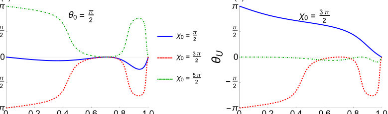
<figcaption class="paper-figure-caption"><b>Fig 1.</b> Figure 1. The Uhlmann phase θU as a function of the spectral factor f. (a) Fixed θ0 = π/2 and three values of χ0; (b) fixed χ0 = 3π/2 and three values of θ0. The phase varies continuously and non-monotonically with f, reaching values of order π at intermediate weights, and vanishes at f = 1 where λ1 = λ2 = 1</figcaption>
</figure>
<figure class="paper-figure-card">
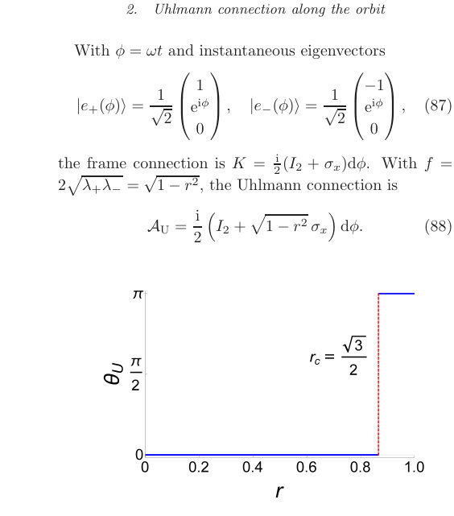
<figcaption class="paper-figure-caption"><b>Fig 2.</b> Figure 2. The Uhlmann phase θU as a function of the Bloch- vector length r: it jumps from 0 to π at the critical purity rc = √</figcaption>
</figure>
<figure class="paper-figure-card">
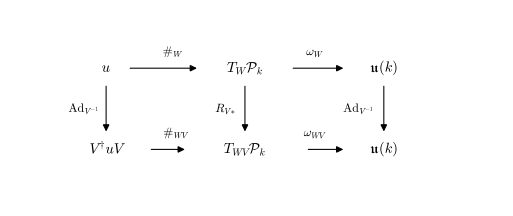
<figcaption class="paper-figure-caption"><b>Fig 3.</b> Figure 3. The Ehresmann connection ω intertwines the nat- ural U(k) action on T Pk with the adjoint action on u(k), cf. Eq. (A7).</figcaption>
</figure>
</div>

<p><strong>Summary.</strong> This paper develops a geometric theory for mixed quantum states by formulating Uhlmann's phase on the manifold of fixed-rank density matrices. It constructs this space as a principal fiber bundle, yielding a unique connection form. The key finding is that this framework predicts non-trivial, quantized topological invariants, linking the geometry of mixed states to measurable phenomena like the quantum Hall effect.</p>
<p><strong>Why it may be interesting.</strong> This work provides a powerful geometric tool to analyze mixed states, moving beyond the limitations of full-rank assumptions. The connection to topological invariants suggests that geometric phases in mixed systems can carry quantized, measurable information.</p>
<details>
<summary>Detailed structure</summary>
<p><strong>Main problem.</strong> The paper extends Uhlmann's geometric phase theory from full-rank to the physically relevant case of fixed-rank density matrices ($   ext{rank}(
ho) = k &lt; N$). It aims to provide a robust geometric diagnostic for mixed-state quantum matter.</p>
<p><strong>Main result.</strong> The fixed-rank state space forms the base of a principal $U(k)$-bundle, allowing the Uhlmann connection to be uniquely determined by a Sylvester equation. This framework predicts non-trivial, quantized topological invariants like the second Chern number for these mixed states.</p>
<p><strong>Method.</strong> The authors employ differential geometry, constructing the theory on the manifold of rank-$k$ density matrices by defining a principal fiber bundle structure over this base manifold. They derive the connection form using techniques related to minimal purifications and the Bures metric.</p>
<p><strong>Model / system.</strong> The system is described by density matrices $
ho$ whose rank is fixed at $k < N$. This models physical scenarios such as reduced states of subsystems or states confined to a decoherence-free subspace.</p>
<p><strong>Key observables.</strong> Uhlmann phase, Chern numbers (especially the second Chern number), Bures distance, and the Uhlmann connection form $\omega$.</p>
<p><strong>Important parameters / regimes.</strong> The fixed rank $k$ relative to the Hilbert space dimension $N$, and the degeneracy of the spectral weights.</p>
<p><strong>Assumptions / limitations.</strong> The theory assumes the existence of minimal purifications $W$ that define the principal $U(k)$-bundle structure over the fixed-rank stratum.</p>
<p><strong>Paper structure.</strong> The paper establishes the principal $U(k)$-bundle structure over the fixed-rank stratum, derives the Uhlmann connection via the Sylvester equation, and calculates topological invariants (like the Chern number) by relating the geometry to known physical responses (e.g., quantum Hall effect).</p>
</details>
<details>
<summary>Abstract</summary>
<p>For full-rank density matrices the state space is contractible, the Uhlmann bundle is topologically trivial, and the holonomy admits no quantized invariants; although the Uhlmann phase is genuinely geometric, this topological poverty has kept it from serving as a robust physical diagnostic of mixed-state matter. Mixed states of fixed rank below the Hilbert-space dimension, however, are ubiquitous: reduced states of subsystems, states in an invariant sector, and states in a decoherence-free subspace all have a support smaller than the Hilbert space that can vary with parameters. Their geometry is far richer: the support carries genuine curvature, non-Abelian holonomy, and Chern topology. We formulate Uhlmann's theory directly on the manifold of rank-$k$ density matrices: minimal purifications make the fixed-rank stratum the base of a principal $U(k)$-bundle whose Uhlmann connection is uniquely determined by a Sylvester equation, and in an eigenframe this connection takes a closed form reducing to the Berry, Wilczek--Zee, and faithful Uhlmann connections at $k=1$, at equal weights, and at $k=N$. The fixed-rank bundle inherits the topology of the Grassmannian, and non-factorizable higher Chern topology requires failure of the global eigenline splitting, which in the present spectral setting requires degeneracy, minimally realized by a rank-2 Yang monopole whose quantized second Chern number links the geometry to the four-dimensional quantum Hall response. Solvable models, from a genuinely non-Abelian holonomy to a decoherence-free Lindblad orbit, illustrate the content: the supporting subspace carries the topology, the spectral weights shape the transport, and the Uhlmann phase provides a direct geometric signature of these mixed-state phase transitions.</p>
</details>
<p><sub><a href="#top">↑ back to top</a></sub></p>

<p><a id="paper-2609.22079"></a></p>
<h3 id="universal-eigenvector-statistics-of-non-hermitian-random-matrices"><a href="http://arxiv.org/abs/2609.22079v1">Universal Eigenvector Statistics of Non-Hermitian Random Matrices</a></h3>
<p><strong>Authors:</strong> Ze Chen, Zhenyu Xiao, Shinsei Ryu<br>
<strong>Type:</strong> theory · <strong>Category:</strong> statistical mechanics · <strong>PDF:</strong> <a href="https://arxiv.org/pdf/2609.22079v1">https://arxiv.org/pdf/2609.22079v1</a><br>
<strong>Analysis basis:</strong> full PDF text, analyzed in chunks
<strong>Topic relevance:</strong> <code>Keldysh / 2PI / non-Gaussian methods</code> <strong>2/5</strong></p>
<div class="figure-strip-hint">↔ Scroll figures horizontally</div>
<div class="paper-figures-scroll">
<figure class="paper-figure-card">
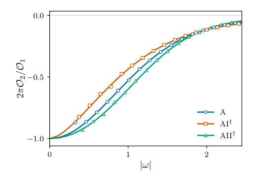
<figcaption class="paper-figure-caption"><b>Fig 1.</b> FIG. 1. Off-diagonal overlaps in classes A, AI†, and AII†, using 100,000 matrices of effective size N = 512 per class. Lines are the replica predictions in Eq. (18).</figcaption>
</figure>
<figure class="paper-figure-card">
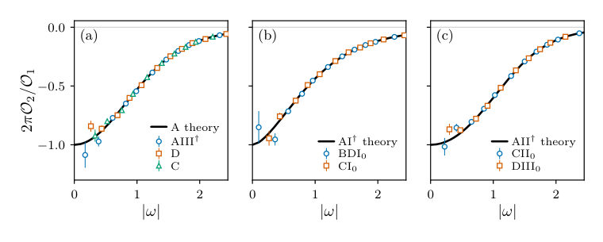
<figcaption class="paper-figure-caption"><b>Fig 2.</b> FIG. 2. Bulk off-diagonal overlaps at N = 256 and ν = 0, using 100,000 matrices per class. (a) Classes AIII†, D, and C compared with class A. (b) Classes BDI0 and CI0 compared with class AI†. (c) Classes CII0 and DIII0 compared with class AII†. Midpoints lie between radii 0.25 √</figcaption>
</figure>
<figure class="paper-figure-card">
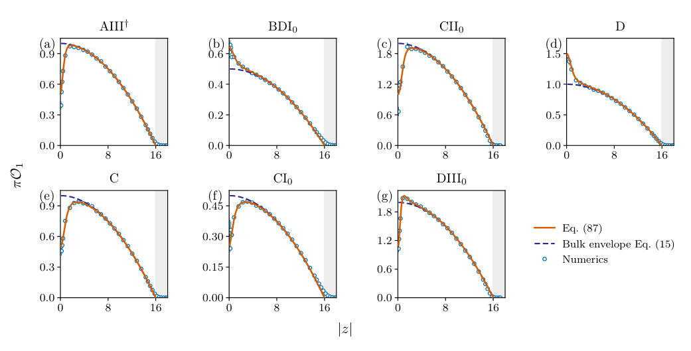
<figcaption class="paper-figure-caption"><b>Fig 3.</b> FIG. 3. Diagonal overlaps at N = 256 and ν = 0, from 600,000 matrices per class: (a) AIII†, (b) BDI0, (c) CII0, (d) D, (e) C, (f) CI0, and (g) DIII0. Solid orange curves show the additive interpolation in Eq. (87), while dashed curves retain only the bulk envelope. The shaded region lies beyond √</figcaption>
</figure>
<figure class="paper-figure-card">
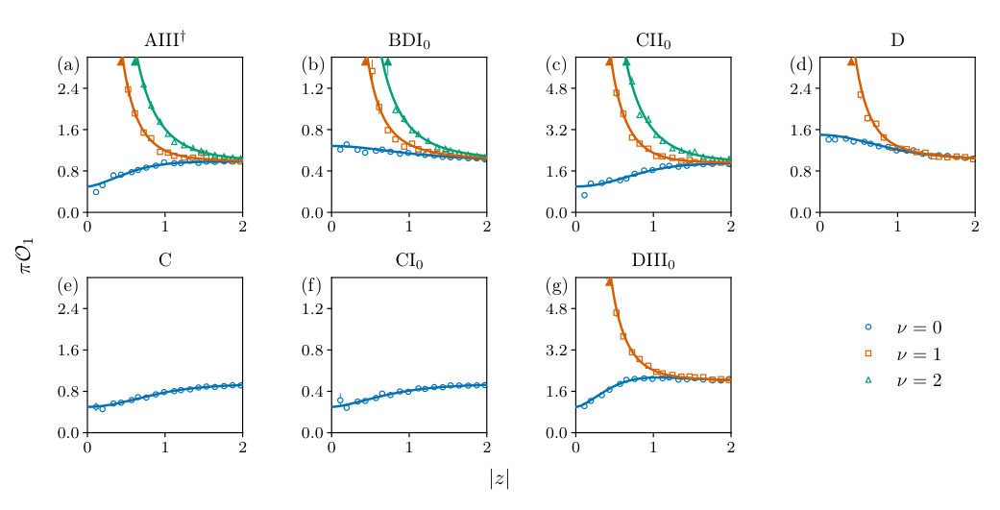
<figcaption class="paper-figure-caption"><b>Fig 4.</b> FIG. 4. Diagonal overlaps, in (a) AIII†, (b) BDI0, (c) CII0, (d) D, (e) C, (f) CI0, and (g) DIII0. Colors and symbols identify ν. Each sector uses 600,000 matrices, with N = 257 for ν = 1 and N = 256 otherwise. Lines show the additive interpolation in Eq. (87). Top-edge triangles indicate the outermost displayed off-scale mean in each series. Protected zero modes, origin-touching bins, and bins with fewer than 100 multiplets are omitted.</figcaption>
</figure>
<figure class="paper-figure-card">
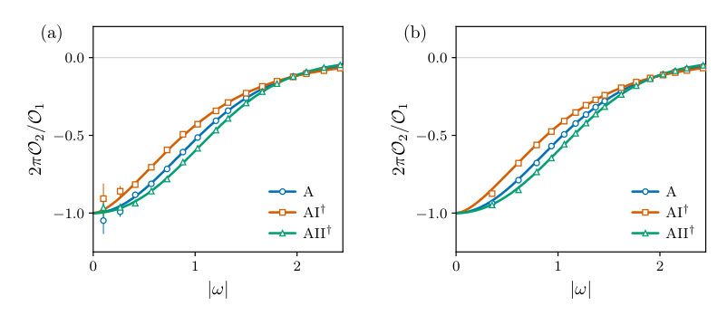
<figcaption class="paper-figure-caption"><b>Fig 5.</b> FIG. 5. Off-diagonal overlaps in physical models. (a) The q = 4 non-Hermitian SYK models in classes A, AI†, and AII† have 18, 16, and 20 Majorana fermions and parity-block dimensions 256, 128, and 512, respectively. Midpoints lie in the central 30% of the spectrum. (b) The Anderson data in classes A and AI† use periodic three-dimensional lattices with L = 8 and W = 3. The data in class AII† use a periodic two-dimensional square lattice with L = 16, W = 3.8, and µ = 2. Each Anderson matrix has dimension 512. Midpoints lie in the central 30% of the spectrum. In class AII†, the spectrum contains 256 distinct rank-two eigenspaces. Both panels use 100,000 realizations per class and local...</figcaption>
</figure>
</div>

<p><strong>Summary.</strong> This work investigates the statistics of eigenvector overlaps in non-Hermitian random matrices, extending universality beyond eigenvalues. Using advanced techniques like replica sigma models, the authors derive analytical results for these overlaps across ten symmetry classes. The key finding is the establishment of a duality connecting non-Hermitian eigenvector statistics directly to known Hermitian spectral correlations.</p>
<p><strong>Why it may be interesting.</strong> The established duality between Hermitian and non-Hermitian spectral statistics provides a powerful theoretical tool for understanding non-Hermitian quantum dynamics, which is crucial for open quantum systems.</p>
<details>
<summary>Detailed structure</summary>
<p><strong>Main problem.</strong> The paper extends the concept of universality from eigenvalue statistics to the statistics of eigenvector overlaps in non-Hermitian random matrices.</p>
<p><strong>Main result.</strong> It establishes a duality between Hermitian level statistics and non-Hermitian eigenvector overlaps, providing analytical expressions for these overlaps across ten symmetry classes.</p>
<p><strong>Method.</strong> The analysis employs fermionic replica nonlinear sigma models to derive analytical expressions for the overlaps in the spectral bulk and near the origin.</p>
<p><strong>Model / system.</strong> The study focuses on non-Hermitian random matrices, covering ensembles characterized by ten Altland-Zirnbauer (AZ0) symmetry classes, and relates findings to physical models like the non-Hermitian Sachdev-Ye-Kitaev (SYK) model.</p>
<p><strong>Key observables.</strong> Eigenvector overlaps (diagonal $O_1$ and off-diagonal $O_2$), eigenvalue densities, and spectral correlations.</p>
<p><strong>Important parameters / regimes.</strong> The results are derived in the limit of large matrix size ($N 	o \infty$), and the universality depends on symmetry classes ($    ext{TRS}^\dagger$, $    ext{PHS}$, $    ext{SLS}$).</p>
<p><strong>Assumptions / limitations.</strong> The analysis assumes the existence of a statistical rotation symmetry for the random matrix ensemble.</p>
<p><strong>Figures summary.</strong> The notes mention Tables I, II, and III summarizing the ten symmetry classes, the bulk diagonal and normalized off-diagonal overlaps for the three main families (A, $ ext{AI}^\dagger$, $ ext{AII}^\dagger$), and the hard-edge diagonal overlaps.</p>
<p><strong>Paper structure.</strong> The paper structure involves reviewing the symmetries, presenting the replica calculation using the sigma model, and comparing the derived predictions with numerical results from various physical models.</p>
</details>
<details>
<summary>Abstract</summary>
<p>Eigenvector overlaps quantify nonorthogonality and govern the response and dynamics of non-Hermitian systems. We extend the universality of non-Hermitian random matrices to the statistics of these overlaps. We obtain analytical expressions for eigenvector overlaps in the spectral bulk and near the origin, covering ten symmetry classes in the limit of large matrix size. Using fermionic replica nonlinear $σ$ models, we relate these overlaps to Hermitian level statistics, symmetry class by symmetry class and topological sector by topological sector. Numerical calculations in various physical models support the universality of the normalized overlaps in the regimes studied. Our work establishes a duality between Hermitian level statistics and non-Hermitian eigenvector overlaps.</p>
</details>
<p><sub><a href="#top">↑ back to top</a></sub></p>

<p><a id="paper-2609.21297"></a></p>
<h3 id="granular-thermostat-implementation-within-the-soft-sphere-discrete-element-method-dem-framework-considerations-and-limitations"><a href="http://arxiv.org/abs/2609.21297v1">Granular thermostat implementation within the soft-sphere Discrete Element Method (DEM) framework, considerations and limitations</a></h3>
<p><strong>Authors:</strong> Marco Previtali, Herbert Eric Huppert, Sergio Andres Galindo Torres<br>
<strong>Type:</strong> theory · <strong>Category:</strong> statistical mechanics · <strong>PDF:</strong> <a href="https://arxiv.org/pdf/2609.21297v1">https://arxiv.org/pdf/2609.21297v1</a><br>
<strong>Analysis basis:</strong> full PDF text, analyzed in chunks
<strong>Topic relevance:</strong> <code>Frenkel-Kontorova</code> <strong>1/5</strong> · <code>Keldysh / 2PI / non-Gaussian methods</code> <strong>1/5</strong> · <code>analog quantum simulation</code> <strong>1/5</strong> · <code>correlated / nonlocal dissipation</code> <strong>1/5</strong> · <code>driven-dissipative phase transition</code> <strong>1/5</strong> · <code>methods for driven-dissipative</code> <strong>1/5</strong> · <code>non-equilibrium universality</code> <strong>1/5</strong> · <code>quantum measurements</code> <strong>1/5</strong></p>
<div class="figure-strip-hint">↔ Scroll figures horizontally</div>
<div class="paper-figures-scroll">
<figure class="paper-figure-card">
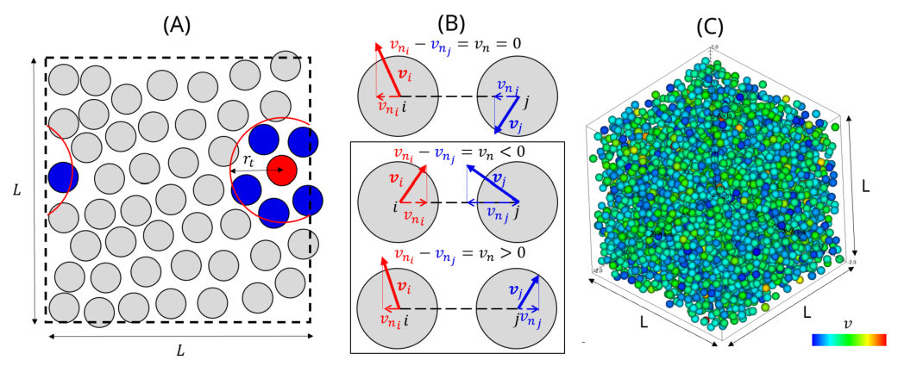
<figcaption class="paper-figure-caption"><b>Fig 1.</b> FIG. 1. (A) Schematic representation of the constant volume periodic cell. Given a particle (red), its thermostat pairs (blue) are identified within the distance rt. (B) Relative velocities of a particle pair projected onto the normal vector. Outside the box, the particles have coherent motion (zero thermal energy, vn = 0). (C) Screenshot of the granular medium during a simulation.</figcaption>
</figure>
<figure class="paper-figure-card">
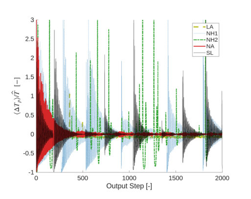
<figcaption class="paper-figure-caption"><b>Fig 2.</b> FIG. 2. Example of the temperature oscillations observed for a fixed Rt = 3 and different thermostats for the first 2000 output steps: LA, ξLa = 102; NH1, ξNH = 10−2; NH2, ξNH = 100. NA and SL adopt the same parameters (ξLa = 10−1, ξNH = 10−2). Note that the maximum value of ⟨∆Tp⟩/ ˆT is capped at 3 in the plot, while some of the Nos´e- Hoover induced oscillations go up to 14.</figcaption>
</figure>
<figure class="paper-figure-card">
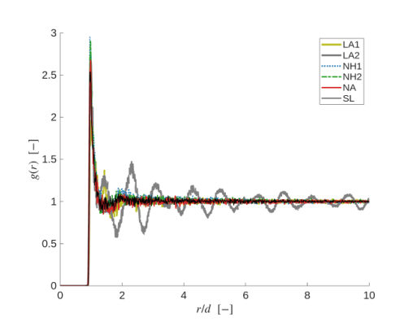
<figcaption class="paper-figure-caption"><b>Fig 3.</b> FIG. 5. Example of the RDF distribution for the different thermostats. The same legend as Figure 3 is used here.</figcaption>
</figure>
<figure class="paper-figure-card">
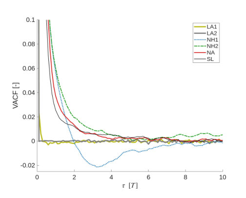
<figcaption class="paper-figure-caption"><b>Fig 4.</b> FIG. 3. Example of the VACF plot for the different ther- mostats. LA1, ξLa = 102, Rt = 3; LA2, ξLa = 103, Rt = 4. NH1, ξNH = 10−2; NH2 ξNH = 100. NA and SL have the same parameters (ξLa = 100, ξNH = 10−2). Rt is set to 3 in all scenarios, except for (LA2) where it is set to 4 to highlight the stronger effect of Langevin dynamics at increased Rt [28].</figcaption>
</figure>
<figure class="paper-figure-card">
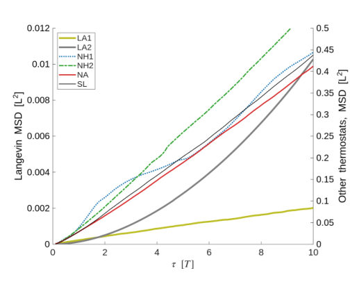
<figcaption class="paper-figure-caption"><b>Fig 5.</b> FIG. 4. Example of the MSD evolution for the different ther- mostats. The same legend as Figure 3 is used here.</figcaption>
</figure>
</div>

<p><strong>Summary.</strong> This paper addresses the difficulty of simulating granular materials by proposing hybrid thermostat algorithms for the Discrete Element Method (DEM). These new methods allow researchers to independently control the granular temperature while also tuning the underlying velocity statistics. This provides a crucial, controlled reference state for developing accurate constitutive models for complex, dissipative systems.</p>
<p><strong>Why it may be interesting.</strong> While focused on classical granular physics, the challenges in implementing thermostats—specifically decoupling energy control from correlation structure—are fundamental problems in non-equilibrium statistical mechanics applicable to open quantum systems.</p>
<details>
<summary>Detailed structure</summary>
<p><strong>Main problem.</strong> The paper aims to develop controlled reference states for studying granular rheology by independently controlling the magnitude of velocity fluctuations (granular temperature) from the statistical character of the forcing.</p>
<p><strong>Main result.</strong> The proposed pairwise hybrid formulations successfully enforce a prescribed granular temperature while allowing independent modification of velocity statistics, providing a controlled framework for constitutive model development.</p>
<p><strong>Method.</strong> The authors introduce two novel pairwise hybrid formulations that combine deterministic temperature regulation with stochastic decorrelation techniques to simulate granular systems.</p>
<p><strong>Model / system.</strong> The study focuses on dense granular flows simulated using the soft-sphere Discrete Element Method (DEM). The system is inherently dissipative, requiring specialized thermostats to maintain controlled energy states.</p>
<p><strong>Key observables.</strong> Granular temperature (variance of velocity fluctuations), apparent friction, diffusivity, and velocity statistics.</p>
<p><strong>Important parameters / regimes.</strong> Inertial number (I), coupling strengths ($\xi_{La}, \xi_{NH}$), and the stochastic decorrelation timescale.</p>
<p><strong>Assumptions / limitations.</strong> Conventional thermostats (Langevin, Nosé-Hoover) have limitations: Langevin requires strong coupling, and Nosé-Hoover fails to account for correlations generated by inelastic collisions.</p>
<p><strong>Figures summary.</strong> Figure 14 (mentioned in notes) shows the Mean Squared Displacement (MSD) evolution for different thermostats, indicating that the growth is only linear for a limited time window.</p>
<p><strong>Paper structure.</strong> The paper analyzes the limitations of existing thermostats (Langevin, Nosé-Hoover) in dissipative DEM systems, introduces the hybrid formulations, and validates the framework by applying it to simple shear flow to study temperature-dependent rheology.</p>
</details>
<details>
<summary>Abstract</summary>
<p>Dense granular flows are commonly investigated using the soft-sphere Discrete Element Method (DEM), whereas large-scale applications generally require continuum models. Granular temperature, defined as the variance of particle velocity fluctuations, is a relevant variable to collapse rheological scaling. However, experimental forcing approaches used to control temperature also affects other aspects of the granular state.   An alternative is to use a thermostat algorithm to control the fluctuation energy directly. Although thermostat algorithms are well established in Molecular Dynamics (MD), their behaviour in dissipative DEM systems has received comparatively little attention. We show that conventional Langevin and Nosé-Hoover thermostats exhibit complementary limitations: Langevin control requires strong coupling to offset collisional dissipation, thereby damping particle dynamics, whereas Nosé-Hoover does not independently disrupt the correlations and segregation generated by repeated inelastic collisions, leading to non-ergodic and numerically unstable states.   To address these limitations, we introduce two pairwise hybrid formulations combining deterministic temperature regulation with stochastic decorrelation. Both enforce the prescribed temperature, while variation of the stochastic decorrelation timescale modifies velocity statistics and associated mesoscopic properties such as diffusivity. Finally, application to pressure-controlled simple shear shows that increasing granular temperature at fixed inertial number reduces the apparent friction, consistent with previously reported trends. The framework therefore provides controlled reference states for comparing differently forced granular systems and identifying the variables required for temperature-dependent constitutive models.</p>
</details>
<p><sub><a href="#top">↑ back to top</a></sub></p>

<p><a id="paper-2609.21757"></a></p>
<h3 id="full-macroscopic-thermalization-and-the-formation-of-schrodingers-cats-by-unitary-time-evolution-in-the-weakly-perturbed-ising-model-applications-of-the-roos-sugimoto-teufel-tumulka-vogel-theory"><a href="http://arxiv.org/abs/2609.21757v1">Full macroscopic thermalization and the formation of Schrödinger's cats by unitary time evolution in the weakly perturbed Ising model - Applications of the Roos-Sugimoto-Teufel-Tumulka-Vogel theory</a></h3>
<p><strong>Authors:</strong> Hal Tasaki<br>
<strong>Type:</strong> theory · <strong>Category:</strong> statistical mechanics · <strong>PDF:</strong> <a href="https://arxiv.org/pdf/2609.21757v1">https://arxiv.org/pdf/2609.21757v1</a><br>
<strong>Analysis basis:</strong> full PDF text, analyzed in chunks
<strong>Topic relevance:</strong> <code>analog quantum simulation</code> <strong>1/5</strong> · <code>non-equilibrium universality</code> <strong>1/5</strong> · <code>scars &amp; prethermalization</code> <strong>1/5</strong></p>
<div class="figure-strip-hint">↔ Scroll figures horizontally</div>
<div class="paper-figures-scroll">
<figure class="paper-figure-card">
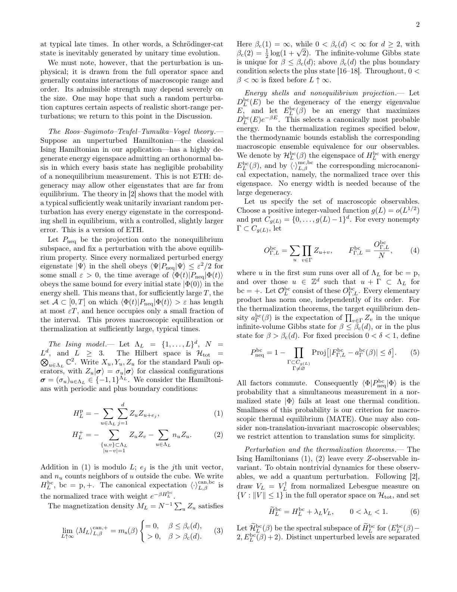
<figcaption class="paper-figure-caption"><b>Fig 1.</b> Low-resolution page preview, page 2</figcaption>
</figure>
<figure class="paper-figure-card">
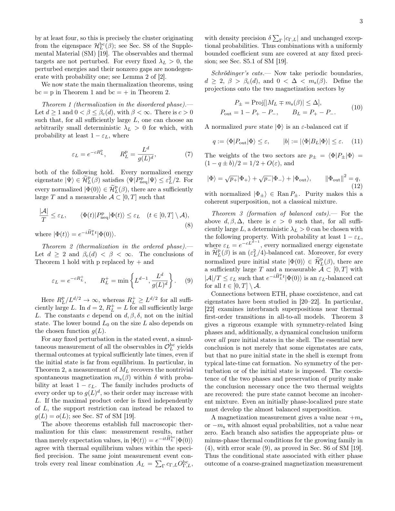
<figcaption class="paper-figure-caption"><b>Fig 2.</b> Low-resolution page preview, page 3</figcaption>
</figure>
<figure class="paper-figure-card">
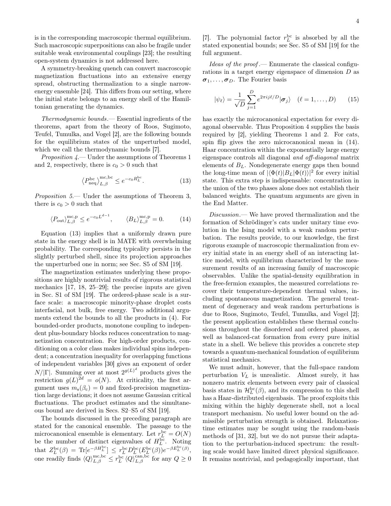
<figcaption class="paper-figure-caption"><b>Fig 3.</b> Low-resolution page preview, page 4</figcaption>
</figure>
<figure class="paper-figure-card">
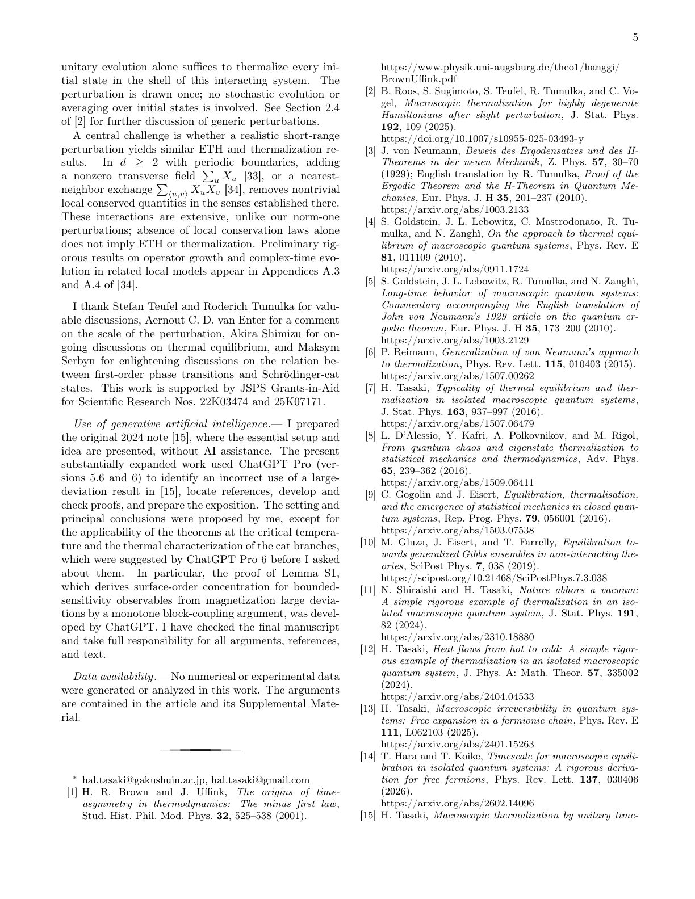
<figcaption class="paper-figure-caption"><b>Fig 4.</b> Low-resolution page preview, page 5</figcaption>
</figure>
<figure class="paper-figure-card">
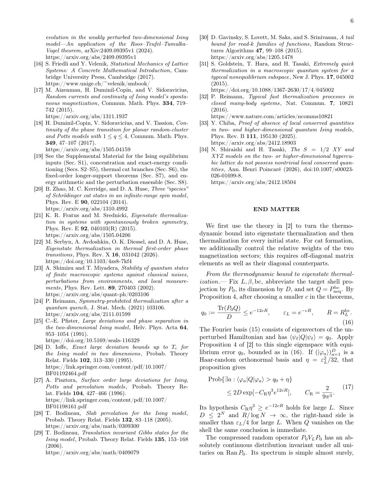
<figcaption class="paper-figure-caption"><b>Fig 5.</b> Low-resolution page preview, page 6</figcaption>
</figure>
</div>

<p><strong>Summary.</strong> This paper establishes a rigorous quantum-mechanical proof that the weakly perturbed Ising model undergoes full macroscopic thermalization via unitary time evolution. It demonstrates that initial states approach thermal equilibrium values for macroscopic observables and, crucially, that the system evolves into a macroscopic Schrödinger's cat state in the ordered phase. The methodology combines advanced quantum theory with rigorous statistical mechanics estimates.</p>
<p><strong>Why it may be interesting.</strong> This work provides a rigorous, purely unitary mechanism for thermalization, which is a major theoretical goal in non-equilibrium statistical mechanics, offering insights into how quantum coherence is lost into thermal equilibrium.</p>
<details>
<summary>Detailed structure</summary>
<p><strong>Main problem.</strong> To rigorously prove that a quantum system, evolving unitarily, achieves macroscopic thermal equilibrium and forms Schrödinger's cat states, even when starting from an arbitrary initial state.</p>
<p><strong>Main result.</strong> The paper proves that for the weakly perturbed Ising model, any initial state thermalizes to the correct equilibrium expectation values, and in the ordered phase, the state evolves into a balanced superposition (Schrödinger's cat state) of the two macroscopic phases.</p>
<p><strong>Method.</strong> The proof combines the Roos–Sugimoto–Teufel–Tumulka–Vogel theory with rigorous Ising large-deviation estimates, analyzing the decay of non-equilibrium projections.</p>
<p><strong>Model / system.</strong> The system is the ferromagnetic Ising model, described by a Hamiltonian $H_L$ (with periodic or plus boundary conditions) perturbed by a weak, generic, highly nonlocal random quantum perturbation. The dynamics are governed by unitary time evolution $e^{-i\widetilde H_L t}$.</p>
<p><strong>Key observables.</strong> Macroscopic observables (sums of Pauli operators), the non-equilibrium projection $P_{neq}$, and the imbalance observable $B_L$ quantifying the superposition between two magnetization sectors.</p>
<p><strong>Important parameters / regimes.</strong> The finite-temperature range ($eta$), the system size $L$, and the perturbation strength $\lambda_L$. The results distinguish between the disordered ($eta \le eta_c$) and ordered ($eta > eta_c$) phases.</p>
<p><strong>Assumptions / limitations.</strong> The analysis relies on the perturbation being random and highly nonlocal, and the proof requires the perturbation strength $\lambda_L$ to be sufficiently small.</p>
<p><strong>Paper structure.</strong> The paper builds from establishing general thermalization bounds for various observables (including linear combinations) in different phases, culminating in the proof that energy eigenstates and typical-time states are almost perfectly balanced Schrödinger-cat states in the ordered phase.</p>
</details>
<details>
<summary>Abstract</summary>
<p>We study macroscopic thermalization in the ferromagnetic Ising model with a weak generic (highly nonlocal and many-body) random quantum perturbation. We prove that a single typical perturbation makes every initial state $|Φ(0)\rangle$ in a specified energy shell thermalize: a measurement of a large class of macroscopic observables in the time-evolved state $|Φ(t)\rangle=e^{-i\widetilde H_Lt}|Φ(0)\rangle$ yields their thermal equilibrium values, within a prescribed precision and with overwhelming probability, at sufficiently large, typical times $t$. The result covers the full finite-temperature range, including the ordered phase, where we use plus boundary conditions. With periodic boundary conditions in the ordered phase, every energy eigenstate in the shell is shown to be an almost balanced macroscopic Schrödinger-cat state. Moreover, every pure initial state becomes such a cat at sufficiently large, typical times, with each branch in the corresponding macroscopic thermal equilibrium. The proof combines the theory of Roos, Sugimoto, Teufel, Tumulka, and Vogel with rigorous Ising large-deviation estimates.</p>
</details>
<p><sub><a href="#top">↑ back to top</a></sub></p>

<p><a id="paper-2609.21897"></a></p>
<h3 id="multi-resolution-wire-fencing-for-efficient-path-sampling"><a href="http://arxiv.org/abs/2609.21897v1">Multi-Resolution Wire-Fencing for Efficient Path Sampling</a></h3>
<p><strong>Authors:</strong> Simen Z. Stenersen Michler, Lukas Baldauf, Titus S. van Erp<br>
<strong>Type:</strong> theory · <strong>Category:</strong> statistical mechanics · <strong>PDF:</strong> <a href="https://arxiv.org/pdf/2609.21897v1">https://arxiv.org/pdf/2609.21897v1</a><br>
<strong>Analysis basis:</strong> full PDF text, analyzed in chunks
<strong>Topic relevance:</strong> <code>analog quantum simulation</code> <strong>1/5</strong> · <code>methods for driven-dissipative</code> <strong>1/5</strong> · <code>quantum measurements</code> <strong>1/5</strong></p>
<div class="figure-strip-hint">↔ Scroll figures horizontally</div>
<div class="paper-figures-scroll">
<figure class="paper-figure-card">
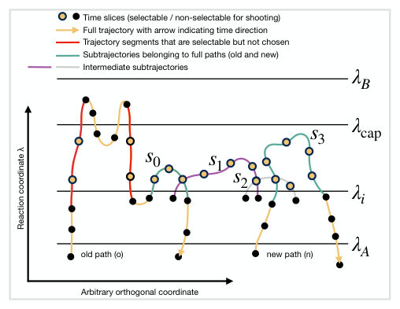
<figcaption class="paper-figure-caption"><b>Fig 1.</b> FIG. 1: Schematic illustration of a wire-fencing (WF) move in the [i+] ensemble, showing how a new path is generated through a sequence of shorter subtrajectories.</figcaption>
</figure>
<figure class="paper-figure-card">
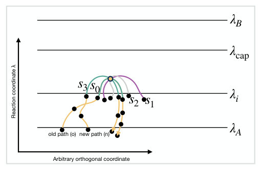
<figcaption class="paper-figure-caption"><b>Fig 2.</b> FIG. 2: Illustration of a wire-fencing (WF) move in which multiple subtrajectories originate from the same shooting point. This scarcity of shooting points can arise from infrequent frame saving, corresponding to a high subcycle number, while at the same time, steep gradients on the potential energy surface lead to a rapid decrease in the order parameter during shooting. Colors, markers, and line styles have the same meaning as in Fig. 1.</figcaption>
</figure>
<figure class="paper-figure-card">
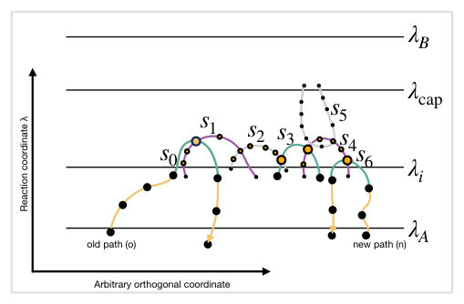
<figcaption class="paper-figure-caption"><b>Fig 3.</b> FIG. 3: Illustration of the multi-resolution wire-fencing move. Colors, markers, and line styles have the same meaning as in Fig. 1, with the smaller spheres representing the high-resolution points. This example illustrates how a new path is obtained from an old path using two sets of three subtrajectories. s5 is a rejected subtrajectory, and s4 is therefore used again to select a shooting point for generating s6.</figcaption>
</figure>
<figure class="paper-figure-card">

<figcaption class="paper-figure-caption"><b>Fig 4.</b> FIG. 4: Comparison of MRWF and conventional wire-fencing for the double-well, puckering, and T4L L99A/benzene systems. Panels (a,b), (c,d), and (e,f) correspond to the double-well, puckering, and T4L systems, respectively; within each pair, the first panel shows the crossing-probability profile and the second the corresponding running rate estimate as a function of Monte Carlo moves. Insets in (a) and (c) show the endpoint region of the double-well and puckering crossing-probability profiles on a linear scale. The vertical dashed lines in panels (a), (c), and (e) represent the interface positions.</figcaption>
</figure>
</div>

<p><strong>Summary.</strong> This paper introduces the Multi-Resolution Wire-Fencing (MRWF) move to overcome sampling bottlenecks in path sampling simulations. By temporarily refining sub-trajectories at higher resolution, MRWF dramatically increases the diversity of available shooting points. This leads to substantial, often order-of-magnitude, improvements in the statistical efficiency of calculating rare-event kinetics.</p>
<p><strong>Why it may be interesting.</strong> While focused on classical MD/path sampling, the core concept of enhancing sampling efficiency by refining intermediate states echoes challenges in simulating complex quantum dynamics or open quantum systems where rare transitions are key.</p>
<details>
<summary>Detailed structure</summary>
<p><strong>Main problem.</strong> The primary challenge is efficiently sampling rare events in complex systems, such as protein unbinding, using path sampling methods.</p>
<p><strong>Main result.</strong> The proposed Multi-Resolution Wire-Fencing (MRWF) move significantly improves sampling efficiency by enhancing the diversity of available shooting points along the trajectory.</p>
<p><strong>Method.</strong> MRWF refines the standard wire-fencing move by propagating selected sub-trajectories at a higher temporal resolution than the stored path frames.</p>
<p><strong>Model / system.</strong> The methods are tested on model systems including a 1D double-well potential, a puckering example, and a realistic protein–ligand unbinding process.</p>
<p><strong>Key observables.</strong> Sampling efficiency, shooting-point diversity ($D_{shot}$), crossing-probability profiles, and estimated rate constants.</p>
<p><strong>Important parameters / regimes.</strong> Frame-saving frequency (low frequency limits sampling), temporal resolution, and the order parameter ($\lambda(x)$) defining the reaction coordinate.</p>
<p><strong>Assumptions / limitations.</strong> The method assumes that the underlying path sampling framework (like super-detailed balance) can be maintained while introducing higher-resolution intermediate steps.</p>
<p><strong>Figures summary.</strong> Figures compare MRWF and WF performance, showing improved crossing-probability profiles and significantly reduced repetition of successive shooting points for MRWF.</p>
<p><strong>Paper structure.</strong> The paper introduces the MRWF move, derives its acceptance criteria using super-detailed balance, and then validates its superior performance by comparing it against conventional wire-fencing on multiple model systems.</p>
</details>
<details>
<summary>Abstract</summary>
<p>Path sampling methods enable the computation of thermodynamic and kinetic properties through Monte Carlo (MC) moves that generate trajectories from short forward and backward molecular dynamics (MD) segments. Recently, the wire-fencing move was developed to achieve near-unity acceptance while also rapidly decorrelating successive paths, two properties that are usually in conflict in conventional MC schemes. However, in large systems, such as biomolecular simulations, the frame-saving frequency is often kept low to reduce storage requirements. Likewise, when evaluating the order parameter is expensive, frames are saved less frequently to reduce the associated cost. In either situation, this can severely limit the number of available shooting points, in extreme situations leaving only a single point, typically the one with the highest order parameter value, accessible for shooting. Repeated shootings may then originate from the same configuration, reducing sampling efficiency. Here, we introduce a multi-resolution variant of the wire-fencing move in which selected subtrajectories are propagated at higher temporal resolution than the stored trajectories. This refinement affects only the MC move and does not alter the structure or storage of the generated paths, but enhances the diffusion of shooting points along the trajectory and thereby improves sampling efficiency. The approach is demonstrated on two model systems and a realistic protein--ligand unbinding process, with the latter showing an estimated efficiency improvement of more than an order of magnitude.</p>
</details>
<p><sub><a href="#top">↑ back to top</a></sub></p>

<p><a id="paper-2609.21373"></a></p>
<h3 id="passive-pauli-toggling-of-polarization-qubits-in-optical-fibers-error-bounds-and-qkd-performance"><a href="http://arxiv.org/abs/2609.21373v1">Passive Pauli Toggling of Polarization Qubits in Optical Fibers: Error Bounds and QKD Performance</a></h3>
<p><strong>Authors:</strong> Bongjune Kim, Jeongho Bang<br>
<strong>Type:</strong> theory · <strong>Category:</strong> quantum information and computing · <strong>PDF:</strong> <a href="https://arxiv.org/pdf/2609.21373v1">https://arxiv.org/pdf/2609.21373v1</a><br>
<strong>Analysis basis:</strong> full PDF text, analyzed in chunks
<strong>Topic relevance:</strong> <code>correlated / nonlocal dissipation</code> <strong>1/5</strong> · <code>interference shaping light</code> <strong>1/5</strong> · <code>quantum measurements</code> <strong>1/5</strong></p>
<div class="figure-strip-hint">↔ Scroll figures horizontally</div>
<div class="paper-figures-scroll">
<figure class="paper-figure-card">

<figcaption class="paper-figure-caption"><b>Fig 1.</b> FIG. 1. Passive spatial Pauli toggling for a polarization-encoded BB84 link. (a) Alice sends a ˆZ- or ˆ X-basis qubit through a fiber of length L containing cyclic Pauli cells of length 4ℓ, where ℓis the device spacing. The physical rotations ˆPj generate the cumulative frames ˆ1, ˆ X, ˆY , ˆZ without real-time feedback, after which Bob performs matched-basis detection. (b) In the toggling frame, ˆHtf j = ˆg† j−1 ˆHjˆgj−1, the four frames reverse different components of the local birefringence generator. Sufficiently slow spatial drift therefore cancels to leading order, yielding ˆVctrl,ω −ˆ1 ≤ε after removal of the known final phase; the schematic denotes this representative by ˆUctrl,ω....</figcaption>
</figure>
<figure class="paper-figure-card">

<figcaption class="paper-figure-caption"><b>Fig 2.</b> FIG. 2. Suppression of polarization-induced channel errors in the spatial OU fiber model. (a) Ensemble-averaged BB84 QBER in the ˆZ and ˆ X bases as a function of device spacing ℓ. Horizontal dashed/dotted lines show the uncontrolled channel. (b) Total Pauli error weight 1 −Fe obtained from the entanglement fidelity. The small-ℓfit is a visual diagnostic of typical scaling in this stochastic model; it is not imposed by the theorem. Error bars are 95% confidence intervals over 200 realizations.</figcaption>
</figure>
<figure class="paper-figure-card">

<figcaption class="paper-figure-caption"><b>Fig 3.</b> Fig. 4 summarizes the engineering message. There is a finite design window, not a monotone rule that “more devices are always better.” For high-transmission devices, decreasing ℓinitially improves the rate because it suppresses coherent polarization errors. Once the QBER is already small, further densification only multiplies loss and reduces the launched-pulse key rate. This behavior is consistent with Eq. (49) and provides a practical way to choose ℓonce device loss and measured polarization drift statistics are known.</figcaption>
</figure>
<figure class="paper-figure-card">

<figcaption class="paper-figure-caption"><b>Fig 4.</b> FIG. 3. BB84 information gain and insertion-loss tradeoff. (a) The symmetric-error secret fraction 1 −2h2(Q), with markers indicating the uncontrolled channel and the controlled optimum for t = 0.997. (b) Key rate per launched pulse versus spacing for two per-device transmissions. The horizontal line is the uncontrolled key rate.</figcaption>
</figure>
<figure class="paper-figure-card">

<figcaption class="paper-figure-caption"><b>Fig 5.</b> FIG. 4. Design map for net BB84 improvement. The color scale is K(ℓ, t)/K0, where K0 is the uncontrolled key rate. The white contour is the break-even line. Above this contour, the QBER reduction produced by spatial Pauli toggling compensates for the insertion loss.</figcaption>
</figure>
</div>

<p><strong>Summary.</strong> This paper introduces a technique called passive Pauli toggling, where fixed Pauli rotations are embedded within an optical fiber to counteract polarization drift caused by birefringence. By repeatedly reversing the accumulated phase rotation, the scheme significantly reduces the Quantum Bit Error Rate (QBER) and boosts the key rate for QKD systems. It offers a loss-aware design principle for stabilizing polarization qubits without requiring continuous active monitoring.</p>
<p><strong>Why it may be interesting.</strong> This work provides a novel, passive, and mathematically rigorous method to precondition quantum communication channels, shifting the burden of error correction from active feedback to the physical structure of the link itself.</p>
<details>
<summary>Detailed structure</summary>
<p><strong>Main problem.</strong> To determine if the quantum channel itself (the optical fiber) can suppress coherent polarization drift in polarization qubits before active feedback is applied, thereby improving Quantum Key Distribution (QKD) performance.</p>
<p><strong>Main result.</strong> The proposed passive Pauli toggling scheme significantly reduces the mean QBER (e.g., from 6.11% to 0.224% in simulation) and increases the asymptotic key rate by a factor of approximately 2.5.</p>
<p><strong>Method.</strong> The authors developed a spatial-control framework by embedding a fixed cyclic sequence of Pauli rotations along the fiber to repeatedly reverse the leading action of the accumulated polarization drift.</p>
<p><strong>Model / system.</strong> The system uses single-photon polarization qubits transmitted through an optical fiber, modeled by a spatial Schrödinger equation whose evolution is controlled by inserting ideal Pauli rotators at discrete segments.</p>
<p><strong>Key observables.</strong> Quantum Bit Error Rates (QBERs) in the X and Z bases, the resulting secret fraction, and the asymptotic key rate per launched pulse.</p>
<p><strong>Important parameters / regimes.</strong> The optimal design is constrained by a finite operating window determined by the balance between error suppression and optical loss.</p>
<p><strong>Assumptions / limitations.</strong> The model excludes polarization-dependent loss and Polarization-Mode Dispersion (PMD); the analysis assumes the Pauli-twirled description is an operational reduction for QBERs.</p>
<p><strong>Figures summary.</strong> The notes do not describe specific figures, but mention a practical workflow table summarizing the measurement of error suppression, insertion penalty, and operational gain by scanning cell spacing.</p>
<p><strong>Paper structure.</strong> The paper establishes the theoretical framework for Pauli toggling, derives end-to-end residual-error bounds for noncommuting drift, connects these bounds to operational QKD quantities (QBERs), and concludes with a loss-aware design principle.</p>
</details>
<details>
<summary>Abstract</summary>
<p>Polarization qubits offer a direct route to fiber-based quantum communication, yet the fiber that carries them also scrambles their reference frame through uncontrolled birefringence. Active compensation commonly relies on monitoring and feedback, raising a natural question: can the link itself suppress coherent polarization drift before it reaches the receiver? We show that it can within a regime of sufficiently correlated unitary drift. Our central idea is to embed a fixed cyclic sequence of Pauli rotations along the fiber, turning propagation distance into a spatial toggling frame. Rather than estimating and inverting the unknown transformation, the sequence repeatedly reverses its leading action. We establish exact refocusing for constant generators compatible with a two-segment echo, show that a four-frame Pauli cell cancels the leading contribution of any traceless quasi-static generator, and bound the residual error for smoothly varying birefringence. We then connect these guarantees to operational BB84 quantities, including measured QBERs, the resulting secret fraction, and insertion loss. In simulations of a 50 km fiber with spatially correlated birefringence, a representative design reduces the mean QBER from 6.11% to 0.224% at a device spacing of 1.25 km. With an assumed per-device transmission of t = 0.997, this raises the asymptotic key rate per launched pulse by a factor of approximately 2.5. For this parameter set, the best design in the tested scan is not the densest one: error suppression and optical loss create a finite operating window. These results provide a loss-aware design principle for passive polarization stabilization and suggest a low-overhead complement to active tracking in polarization-encoded QKD networks.</p>
</details>
<p><sub><a href="#top">↑ back to top</a></sub></p>

<p><a id="paper-2609.21724"></a></p>
<h3 id="self-avoiding-trails-in-two-and-three-dimensions"><a href="http://arxiv.org/abs/2609.21724v1">Self-avoiding trails in two and three dimensions</a></h3>
<p><strong>Authors:</strong> Xiaodi Su, Zongzheng Zhou, Qianqian Wu<br>
<strong>Type:</strong> theory · <strong>Category:</strong> statistical mechanics · <strong>PDF:</strong> <a href="https://arxiv.org/pdf/2609.21724v1">https://arxiv.org/pdf/2609.21724v1</a><br>
<strong>Analysis basis:</strong> full PDF text, analyzed in chunks
<strong>Topic relevance:</strong> <code>analog quantum simulation</code> <strong>1/5</strong> · <code>methods for driven-dissipative</code> <strong>1/5</strong> · <code>non-equilibrium universality</code> <strong>1/5</strong></p>
<div class="figure-strip-hint">↔ Scroll figures horizontally</div>
<div class="paper-figures-scroll">
<figure class="paper-figure-card">

<figcaption class="paper-figure-caption"><b>Fig 1.</b> Fig. 1. Plot of the unwrapped end-to-end distance ξu rescaled by L, on the simple-cubic lattice.</figcaption>
</figure>
<figure class="paper-figure-card">

<figcaption class="paper-figure-caption"><b>Fig 2.</b> Fig. 2. Plot of the Binder ratio Q versus z on the simple-cubic lattice.</figcaption>
</figure>
<figure class="paper-figure-card">

<figcaption class="paper-figure-caption"><b>Fig 3.</b> Fig. 3. Plot of Q versus L at our estimated zc and at five standard deviations above and below our estimated zc. The curves correspond to our preferred fits of the data by the ansatz Eq. (5) on the simple cubic lattice.</figcaption>
</figure>
<figure class="paper-figure-card">

<figcaption class="paper-figure-caption"><b>Fig 4.</b> Fig. 5. Plot of the Binder ratio Q versus z on the square lattice.</figcaption>
</figure>
<figure class="paper-figure-card">

<figcaption class="paper-figure-caption"><b>Fig 5.</b> Fig. 4. Plot of the unwrapped end-to-end distance ξu rescaled by L on the square lattice.</figcaption>
</figure>
</div>

<p><strong>Summary.</strong> This work investigates the critical properties of self-avoiding trails on 2D and 3D lattices using advanced Monte Carlo simulations. By analyzing observables like the Binder ratio and end-to-end distance, the authors provide highly precise estimates for the critical points. The study confirms that the critical scaling behavior of SATs mirrors that of standard self-avoiding walks.</p>
<p><strong>Why it may be interesting.</strong> While focused on classical lattice statistics, the rigorous application of advanced Monte Carlo techniques and finite-size scaling analysis is highly relevant to understanding critical phenomena in complex quantum many-body systems.</p>
<details>
<summary>Detailed structure</summary>
<p><strong>Main problem.</strong> The paper aims to accurately estimate the critical points and study the critical scaling behavior of self-avoiding trails (SATs) in two and three dimensions.</p>
<p><strong>Main result.</strong> Accurate critical point estimates were obtained for the simple cubic (0.206...) and square lattices (0.367...), significantly improving previous results. Furthermore, the scaling behaviors of SATs and SAWs were shown to be consistent at the critical point.</p>
<p><strong>Method.</strong> The study employs finite-size analyses of observables like the unwrapped end-to-end distance and the Binder ratio, utilizing advanced Markov Chain Monte Carlo algorithms.</p>
<p><strong>Model / system.</strong> The model is the self-avoiding trail (SAT) on square and simple cubic lattices with periodic boundary conditions. SATs differ from self-avoiding walks (SAWs) by prohibiting multiple traversals along the same lattice edge.</p>
<p><strong>Key observables.</strong> Unwrapped end-to-end distance ($\xi_u$), Binder ratio ($Q$), mean trail length ($N$), susceptibility ($\chi$), and critical exponents ($
u, \gamma, \alpha$).</p>
<p><strong>Important parameters / regimes.</strong> The fugacity parameter ($z$), lattice dimensionality (2D and 3D), and lattice size ($L$).</p>
<p><strong>Assumptions / limitations.</strong> The analysis relies on the validity of finite-size scaling ansatzes and the efficiency of the irreversible MCMC algorithm.</p>
<p><strong>Figures summary.</strong> Figures illustrate the convergence of observables like $\xi_u/L$ and $Q$ to estimate $z_c$ on both lattices, and show data collapse for scaling behaviors of $N, \chi, C$ for both SAT and SAW.</p>
<p><strong>Paper structure.</strong> The paper systematically develops the methodology using irreversible MCMC to calculate observables, performs finite-size scaling fits to determine $z_c$, and then compares the resulting critical exponents and distribution functions for SATs versus SAWs.</p>
</details>
<details>
<summary>Abstract</summary>
<p>The self-avoiding trail is an important variant of the self-avoiding walk. In this work, we employ an irreversible Markov chain Monte Carlo algorithm, together with the reversible Berretti-Sokal algorithm for comparison, to simulate self-avoiding trails on the square and simple cubic lattices with periodic boundary conditions. Based on finite-size analyses of the unwrapped end-to-end distance and the Binder ratio, we accurately estimate the critical points on the simple cubic and square lattices to be 0.206\,376\,9(2) and 0.367\,561\,1(1), respectively, improving the precision of previous best estimates by factors of 500 and 70. At the estimated critical point of the simple cubic lattice, we numerically demonstrate that both the critical scaling behaviors of various quantities and the length distributions of self-avoiding trails and walks are consistent with each other. Our accurate numerical results are attributed to the efficiency of the irreversible algorithm, whose advantage over the reversible algorithm is even more pronounced for the self-avoiding trail model than for the self-avoiding walk model.</p>
</details>
<p><sub><a href="#top">↑ back to top</a></sub></p>

<p><a id="paper-2609.21204"></a></p>
<h3 id="simulation-and-network-assembly-pipelines-for-dynamically-bonded-soft-materials"><a href="http://arxiv.org/abs/2609.21204v1">Simulation and Network Assembly Pipelines for Dynamically Bonded Soft Materials</a></h3>
<p><strong>Authors:</strong> Tanner A. Wilcoxson, Tianhao Li, Tyla R. Holoman, Gaurav Mitra, Thomas M. Truskett, Glen M. Hocky<br>
<strong>Type:</strong> theory · <strong>Category:</strong> statistical mechanics · <strong>PDF:</strong> <a href="https://arxiv.org/pdf/2609.21204v1">https://arxiv.org/pdf/2609.21204v1</a><br>
<strong>Analysis basis:</strong> full PDF text, analyzed in chunks
<strong>Topic relevance:</strong> <code>driven-dissipative phase transition</code> <strong>1/5</strong> · <code>methods for driven-dissipative</code> <strong>1/5</strong> · <code>non-equilibrium universality</code> <strong>1/5</strong></p>
<div class="figure-strip-hint">↔ Scroll figures horizontally</div>
<div class="paper-figures-scroll">
<figure class="paper-figure-card">

<figcaption class="paper-figure-caption"><b>Fig 1.</b> FIG. 1. One bonding sweep, drawn for a single reaction pair set at frozen particle positions; the coordinates are identical in all four panels because a sweep is evaluated between integration steps. Circles are reactive sites, colored by particle type, and heavy lines are dynamic bonds. (a) Every unoccupied site scans the neighbor list and keeps the one free, type-compatible partner lying in [rmin, rmax] whose separation is closest to the bond rest length; site 1 accordingly proposes 2 (dashed) rather than the more distant 3 (dotted), and sites 7 and 8, which already carry a bond, are invisible to the search. (b) Claims are resolved so that no site appears in more than one proposal: sites 1...</figcaption>
</figure>
<figure class="paper-figure-card">

<figcaption class="paper-figure-caption"><b>Fig 2.</b> FIG. 2. Example of registering two competing reactions with the DyBond plugin. Sites of type A may bond to either B or C, but hold at most one dynamic bond at a time, so the two reactions compete through the shared occupancy record of Sec. II C. Here the fourfold difference in koff makes the A–B product the more stable of the two by kBT ln 4. Each reaction takes its rest length r0 from the bond potential it names and must state, through selfAvoidFlag, whether sites of the same molecule may bond to each other. The neighbor list cutoff for each reacting type pair is raised to rmax, if it is smaller, when the updater attaches, and the trigger period supplies the n of Eq. (2).</figcaption>
</figure>
<figure class="paper-figure-card">

<figcaption class="paper-figure-caption"><b>Fig 3.</b> FIG. 3. Architecture of pySNAP’s declarative workflow en- gine. Pipelines are defined by typed Variables and discrete pa- rameter Sweeps, whose Cartesian product produces the para- metric space. Simulation Stages are user-defined tasks topo- logically sorted by execution dependencies. The engine maps parameter combinations into discrete SPoints (state points) and automatically links upstream stage artifacts to down- stream stages for unified access across SPoints.</figcaption>
</figure>
<figure class="paper-figure-card">

<figcaption class="paper-figure-caption"><b>Fig 4.</b> FIG. 4. Example parameter declarations within the params/ directory. The specified SPoint values of each variable are injected in-place at variable directives (denoted by !v_variable) before the SPoint is executed. Nested dictio- naries and lists are allowed.</figcaption>
</figure>
<figure class="paper-figure-card">

<figcaption class="paper-figure-caption"><b>Fig 5.</b> FIG. 5. Example stage simulation script demonstrating SPoint_Manager use, simulation checkpointing, parameter and variable fetching, and dependency access. The stage sim- ulation script is run from within each specific SPoint direc- tory, allowing direct access to dependency links created during SPoint generation.</figcaption>
</figure>
</div>

<p><strong>Summary.</strong> This paper presents pySNAP, an open-source computational platform designed to simulate soft materials held together by dynamic, reversible bonds. It integrates GPU-accelerated molecular dynamics with a specialized plugin that accurately models bond formation and breaking kinetics. This allows researchers to systematically study how microscopic bond chemistry dictates macroscopic material properties in a high-throughput manner.</p>
<p><strong>Why it may be interesting.</strong> The focus on controlling bond kinetics and simulating phase behavior in soft matter falls directly under non-equilibrium statistical mechanics, making it highly relevant for understanding complex many-body dynamics.</p>
<details>
<summary>Detailed structure</summary>
<p><strong>Main problem.</strong> The primary challenge is bridging the gap between the microscopic kinetics of reversible bonds and the resulting macroscopic, bulk properties of soft materials.</p>
<p><strong>Main result.</strong> The authors introduce pySNAP, a comprehensive, modular platform that enables systematic, high-throughput simulation studies of soft materials governed by dynamic bonding kinetics.</p>
<p><strong>Method.</strong> The platform integrates GPU-accelerated molecular dynamics (HOOMD-blue) with a specialized plugin (DyBond) that handles dynamic bond formation and breaking based on equilibrium distributions.</p>
<p><strong>Model / system.</strong> The system involves soft materials linked by reversible covalent or supramolecular bonds, modeled using dynamic bonding reactions treated as two-state systems with defined on-rates and off-rates.</p>
<p><strong>Key observables.</strong> Elastic moduli, stress relaxation time, gelation state, and the kinetics of bond formation/dissociation.</p>
<p><strong>Important parameters / regimes.</strong> Bonding/dissociation rate constants ($k_{on}, k_{off}$), temperature ($T$), and the timescale separation between bond kinetics and network rearrangement.</p>
<p><strong>Assumptions / limitations.</strong> The method assumes that the bonding sweep process maintains detailed balance and that the rate constants can be modified by external factors like temperature or mechanical load.</p>
<p><strong>Figures summary.</strong> Figure 1 illustrates the four sequential phases (Proposal, Matching, Acceptance, Breaking) of a single dynamic bonding sweep. Figure 12 compares the throughput of a rigid-core droplet model versus a standard model as a function of the number of tether beads ($n$).</p>
<p><strong>Paper structure.</strong> The paper first identifies the scientific gap, then details the pySNAP platform architecture (integrating HOOMD-blue and DyBond). It mathematically describes the dynamic bonding mechanism (two-state reactions, Metropolis acceptance), discusses advanced rate modifiers (load-dependent unbinding), and concludes with demonstrations on various complex systems.</p>
</details>
<details>
<summary>Abstract</summary>
<p>Soft materials linked by reversible covalent or supramolecular bonds form a diverse class of assemblies with promising applications from nanoscience to medicine. Experiments typically probe bulk phase behavior and rheology, but it remains difficult to measure how microscopic bonding kinetics and the mechanics of the constituent elements give rise to bulk properties. Coarse-grained molecular dynamics (MD) simulations can bridge these scales, but most simulation approaches do not control individual bond kinetics, and those that do were mostly developed for bespoke applications that do not readily generalize. Here we present pySNAP (Simulation and Network Assembly Pipelines), a modular open source Python platform that integrates tunable dynamic bonding with a workflow, template, and analysis setup, so that users can study a wide range of systems with only small changes to input files. The platform is built on the GPU-accelerated HOOMD-blue MD engine and integrates DyBond, a GPU-accelerated plugin that forms and breaks bonds consistent with an equilibrium distribution and supports bonding between multiple types of partner species. Around this core, the snap_simulate package compiles a directory of parameter files into a HOOMD-blue simulation, and the snap_workflow package orchestrates the resulting parameter sweeps across workstations and high-performance computing schedulers. We describe the theory behind simulated dynamic bonding and how to use the package, from setting up a parameter sweep to analyzing its results, and demonstrate the framework on a diverse range of dynamically bonded systems, showing that it accommodates distinct interaction mechanisms, geometries, and physical scenarios within a unified workflow, while enabling both reproduction of existing models and rapid construction of more complex composite systems.</p>
</details>
<p><sub><a href="#top">↑ back to top</a></sub></p>

<p><a id="paper-2609.21973"></a></p>
<h3 id="unified-field-bosonization-technique-for-strongly-inhomogenous-luttinger-liquids"><a href="http://arxiv.org/abs/2609.21973v1">Unified Field Bosonization Technique for strongly inhomogenous Luttinger Liquids</a></h3>
<p><strong>Authors:</strong> Soundarya P, Venkata Suryanarayana M, Joy Prakash Das<br>
<strong>Type:</strong> theory · <strong>Category:</strong> strongly correlated electrons · <strong>PDF:</strong> <a href="https://arxiv.org/pdf/2609.21973v1">https://arxiv.org/pdf/2609.21973v1</a><br>
<strong>Analysis basis:</strong> full PDF text, analyzed in chunks
<strong>Topic relevance:</strong> <code>Frenkel-Kontorova</code> <strong>1/5</strong> · <code>Keldysh / 2PI / non-Gaussian methods</code> <strong>1/5</strong> · <code>analog quantum simulation</code> <strong>1/5</strong></p>
<div class="figure-strip-hint">↔ Scroll figures horizontally</div>
<div class="paper-figures-scroll">
<figure class="paper-figure-card">

<figcaption class="paper-figure-caption"><b>Fig 1.</b> Low-resolution page preview, page 2</figcaption>
</figure>
<figure class="paper-figure-card">

<figcaption class="paper-figure-caption"><b>Fig 2.</b> Low-resolution page preview, page 3</figcaption>
</figure>
<figure class="paper-figure-card">

<figcaption class="paper-figure-caption"><b>Fig 3.</b> Low-resolution page preview, page 4</figcaption>
</figure>
<figure class="paper-figure-card">

<figcaption class="paper-figure-caption"><b>Fig 4.</b> Low-resolution page preview, page 5</figcaption>
</figure>
<figure class="paper-figure-card">

<figcaption class="paper-figure-caption"><b>Fig 5.</b> Low-resolution page preview, page 6</figcaption>
</figure>
</div>

<p><strong>Summary.</strong> This work introduces the Unified Field Bosonization Technique (UFBT) to analytically calculate correlation functions in strongly inhomogeneous Luttinger Liquids. The technique successfully handles static impurities without relying on perturbative expansions or renormalization group methods. It provides universal results for correlation exponents while accurately capturing the spatial structure imposed by the impurities.</p>
<p><strong>Why it may be interesting.</strong> The analytical treatment of strong spatial inhomogeneity in 1D correlated systems is crucial for understanding transport phenomena in nanoscale conductors, which often exhibit strong electron-electron interactions.</p>
<details>
<summary>Detailed structure</summary>
<p><strong>Main problem.</strong> The paper aims to develop an analytical method to calculate correlation functions in strongly inhomogeneous one-dimensional Luttinger Liquids (LLs) containing static impurities.</p>
<p><strong>Main result.</strong> The Unified Field Bosonization Technique (UFBT) yields closed-form expressions for N-point correlation functions, showing that correlation exponents are independent of impurity strength.</p>
<p><strong>Method.</strong> It introduces the UFBT, a direct bosonization framework that incorporates impurity scattering via a symmetrized combination of bosonic phase fields, avoiding RG analysis or perturbative expansions.</p>
<p><strong>Model / system.</strong> The system is an interacting electron gas modeled as a Luttinger Liquid in one dimension, perturbed by localized static impurities (barriers and wells). The Hamiltonian involves electron-electron interactions and impurity potentials.</p>
<p><strong>Key observables.</strong> N-point correlation functions, single-particle Green's functions, local/dynamical density of states, and Friedel oscillations.</p>
<p><strong>Important parameters / regimes.</strong> Impurity strength (characterized by reflection/transmission amplitudes), Luttinger parameter (K), and bulk velocities ($v_h, v_F$).</p>
<p><strong>Assumptions / limitations.</strong> The method relies on a generalized Fermi-Bose correspondence for strong inhomogeneity and uses the Gaussian approximation for calculating bosonized two-point functions.</p>
<p><strong>Figures summary.</strong> Not specified.</p>
<p><strong>Paper structure.</strong> The paper builds the formalism by first establishing the non-interacting case, then incorporating forward-scattering interactions via the DDCF, and finally deriving the full interacting Green's functions and N-point correlation functions using the UFBT.</p>
</details>
<details>
<summary>Abstract</summary>
<p>We introduce the Unified Field Bosonization Technique (UFBT), a direct bosonization framework for strongly inhomogeneous one-dimensional Luttinger liquids (LLs) containing static impurities. UFBT incorporates impurity scattering through a symmetrized combination of bosonic phase fields and yields closed-form expressions for arbitrary N-point correlation functions for a broad class of static impurity potentials, including delta barriers, finite barriers and finite wells. The formalism requires neither renormalization-group analysis nor perturbative expansions, providing an analytical description of the inhomogeneous system at the bosonized level. The technique is validated by recovering known limiting cases, showing agreement with the first-order perturbative expansion in the interaction strength, and demonstrating consistency with the Schwinger-Dyson equations. A key result is that the correlation function exponents remain independent of the impurity strength, while the impurity dependence is captured by the spatial structure and amplitudes of the correlation functions. The resulting correlation functions establish a foundation for analytical studies of transport, Friedel oscillations, and the local and dynamical density of states in strongly inhomogeneous Luttinger liquids.</p>
</details>
<p><sub><a href="#top">↑ back to top</a></sub></p>

<p><a id="paper-2609.22051"></a></p>
<h3 id="correlation-enhanced-magnetism-at-a-superconducting-cupratemanganite-interface"><a href="http://arxiv.org/abs/2609.22051v1">Correlation enhanced magnetism at a superconducting cuprate/manganite interface</a></h3>
<p><strong>Authors:</strong> Vitor A. M. Lima, Marcello Civelli, Walber Hugo de Brito<br>
<strong>Type:</strong> theory · <strong>Category:</strong> strongly correlated electrons · <strong>PDF:</strong> <a href="https://arxiv.org/pdf/2609.22051v1">https://arxiv.org/pdf/2609.22051v1</a><br>
<strong>Analysis basis:</strong> full PDF text, analyzed in chunks
<strong>Topic relevance:</strong> <code>Keldysh / 2PI / non-Gaussian methods</code> <strong>1/5</strong> · <code>methods for driven-dissipative</code> <strong>1/5</strong></p>
<div class="figure-strip-hint">↔ Scroll figures horizontally</div>
<div class="paper-figures-scroll">
<figure class="paper-figure-card">

<figcaption class="paper-figure-caption"><b>Fig 1.</b> FIG. 1. a) Relaxed structure of YBa2Cu3O7 (1 u.c.)/LaMnO3 (1 u.c.) reference supercell, with MnO2–BaO interface termina- tion. Blue, violet, and red spheres represent the Cu, Mn, and O atoms, respectively. Ba atoms are represented in yellow, while La in green. b) Effective bilayer Hubbard model for the two CuO2 planes. We retain hopping amplitudes up to third-nearest neighbors (t, t′, and t′′). The two planes are coupled by the interlayer hopping tz, while local correlations and on-site energies are described by U and εd, respectively. In the schematic, M labels the spin-dependent on-site term associated with magnetic proximity to the manganite; it shifts the two spin projections in...</figcaption>
</figure>
<figure class="paper-figure-card">

<figcaption class="paper-figure-caption"><b>Fig 2.</b> FIG. 2. a) All-electron DFT band structure of the YBCO/LMO reference structure (black curves) and Wan- nier interpolation of the two low-energy CuO2-derived anti- bonding bands retained in the effective bilayer model (purple curves). The Fermi level is set to zero. b) Corresponding non- interacting Fermi-surface cut in the kx-ky plane at kz = 0. The two Fermi-surface sheets originate from the bonding– antibonding (red–blue) splitting of the CuO2 bilayer.</figcaption>
</figure>
<figure class="paper-figure-card">

<figcaption class="paper-figure-caption"><b>Fig 3.</b> FIG. 3. Local spectral functions in the superconducting state at fixed hole doping p = 7%, for a) M/t = 0.04 and b) M/t = 0.18, the last superconducting solution on the increasing-field branch. Blue and red dashed curves show the spin-up and spin-down contributions, respectively; the black solid curve is their sum. Increasing the exchange field separates the spin- resolved features and brings spectral weight toward the Fermi level, producing the low-energy peak in panel b). The vertical dotted line marks ω = 0. Energies are expressed in units of the nearest-neighbor hopping |t| ≈0.404 eV.</figcaption>
</figure>
<figure class="paper-figure-card">

<figcaption class="paper-figure-caption"><b>Fig 4.</b> FIG. 4. Real parts of the retarded anomalous Green’s func- tions at the antinode k = (π, 0): a) even-frequency spin- singlet and b) odd-frequency Sz = 0 spin-triplet components. Black solid and gold dashed curves correspond to M/t = 0.04 and M/t = 0.18, respectively. The singlet real part is even in ω, while the triplet real part is odd. At the higher field, the singlet features are reduced and the opposite-sign triplet lobes move closer to ω = 0.</figcaption>
</figure>
<figure class="paper-figure-card">

<figcaption class="paper-figure-caption"><b>Fig 5.</b> FIG. 5. Field evolution at fixed hole doping p = 7%. a) Superconducting amplitude ⟨D⟩: black filled circles follow in- creasing M/t from 0 to 0.22 (SC →NS), and dark green filled circles follow the reverse scan (NS →SC). Their dif- ferent switching fields reveal hysteresis. Open red and blue circles are Deven and Dodd on the superconducting increasing- field branch; gray crosses denote constrained normal solu- tions. The two vertical dashed lines bracket the transition fields of the two scans. b) Induced magnetic moment: black circles and gray crosses are the direct CDMFT results along the increasing-field and constrained normal branches, respec- tively. Black dashed and gray solid lines...</figcaption>
</figure>
</div>

<p><strong>Summary.</strong> This theoretical study models the magnetic coupling at a superconducting cuprate/manganite interface using a correlated Hubbard model solved via CDMFT. The key finding is that strong electronic correlations allow superconductivity to enhance the interfacial magnetism, contrary to simple expectations. This work provides insights into the complex interplay between magnetism and unconventional superconductivity in high-temperature superconductors.</p>
<p><strong>Why it may be interesting.</strong> The mechanism by which strong correlations mediate a coupling between superconductivity and magnetism—specifically enhancement rather than suppression—is a central, highly active area of research in condensed matter theory relevant to unconventional superconductivity.</p>
<details>
<summary>Detailed structure</summary>
<p><strong>Main problem.</strong> The study investigates the complex interplay between proximity-induced ferromagnetism from a manganite layer and superconductivity in cuprate heterostructures.</p>
<p><strong>Main result.</strong> The research finds that under strong electronic correlations, superconductivity can enhance, rather than suppress, the interfacial magnetism, leading to a counterintuitive reversal of the magnetic moment in the superconducting state.</p>
<p><strong>Method.</strong> The authors employed Cluster Dynamical Mean-Field Theory (CDMFT) to solve a correlated bilayer Hubbard model derived from first-principles calculations.</p>
<p><strong>Model / system.</strong> The system is a cuprate/manganite interface modeled by a correlated bilayer Hubbard Hamiltonian incorporating a local exchange spin-splitting field ($H_F M$). The model is applied to the $    ext{CuO}_2$ layers of YBCO.</p>
<p><strong>Key observables.</strong> Superconducting-induced Cu spin polarization, total magnetic moment ($\langle M 
angle$), and the emergence of a spin-polarized pseudogap.</p>
<p><strong>Important parameters / regimes.</strong> The strength of the interfacial exchange field ($M$), the Hubbard repulsion ($U$), and the doping level (underdoped regime).</p>
<p><strong>Assumptions / limitations.</strong> The magnetic proximity effect is modeled phenomenologically via a local exchange term, and the analysis excludes orbital effects like screening or vortex formation.</p>
<p><strong>Figures summary.</strong> Figures illustrate the structural relaxation and effective model parameters for the interface, and later show the dependence of magnetic susceptibility ($\chi$) and magnetization ($M$) on the proximity field $M$.</p>
<p><strong>Paper structure.</strong> The paper first establishes the physical model using DFT/tight-binding parameterization, then applies CDMFT to solve the correlated Hubbard model, analyzing the coexistence regime, the magnetic moment reversal, and the first-order collapse of superconductivity at strong fields.</p>
</details>
<details>
<summary>Abstract</summary>
<p>Motivated by experimental studies on cuprate-manganite heterostructures, we study a correlated bilayer Hubbard model subject to a local interfacial exchange field using cluster dynamical mean-field theory in the underdoped cuprate regime. We find that superconductivity coexists with a manganite-induced Cu spin polarization. Remarkably, throughout this coexistence regime, the superconducting solution carries a larger magnetic moment than the corresponding constrained normal state. Analysis of the magnetic response shows that this reversal is driven by correlations, which enhance magnetism already in the normal state and even more strongly in the superconducting solution. At stronger exchange fields, superconductivity collapses abruptly, displaying hysteresis consistent with a first-order transition, and a strongly spin-polarized pseudogap emerges. These results show that, under strong electronic correlations, superconductivity can enhance rather than suppress interfacial magnetism.</p>
</details>
<p><sub><a href="#top">↑ back to top</a></sub></p>

<p><a id="paper-2609.20922"></a></p>
<h3 id="metallic-neel-order-stabilized-by-coupling-between-inequivalent-hubbard-layers"><a href="http://arxiv.org/abs/2609.20922v1">Metallic Néel order stabilized by coupling between inequivalent Hubbard layers</a></h3>
<p><strong>Authors:</strong> Yi-Ming Wu, Jessica Yiqi Pan, Hong Yao, Steven A. Kivelson<br>
<strong>Type:</strong> theory · <strong>Category:</strong> strongly correlated electrons · <strong>PDF:</strong> <a href="https://arxiv.org/pdf/2609.20922v1">https://arxiv.org/pdf/2609.20922v1</a><br>
<strong>Analysis basis:</strong> full PDF text, analyzed in chunks
<strong>Topic relevance:</strong> <code>Frenkel-Kontorova</code> <strong>1/5</strong> · <code>analog quantum simulation</code> <strong>1/5</strong></p>
<div class="figure-strip-hint">↔ Scroll figures horizontally</div>
<div class="paper-figures-scroll">
<figure class="paper-figure-card">

<figcaption class="paper-figure-caption"><b>Fig 1.</b> FIG. 1. Hartree-Fock ground-state phase diagrams of the square-lattice Hubbard model with U = 2t: (a) on a single layer 60 × 60 torus and (b) on a bilayer 2 × 40 × 40 torus. Positive δ corresponds to hole doping while negative δ elec- tron doping. In (a), t′/t is varied. The N´eel and stripe states marked by magenta circles and turquoise triangles, respec- tively, are insulating, while all other phases are metallic. In (b), t⊥/t is varied at fixed t′ = −0.1t and fixed potential dif- ference δµ = 0.1t between the two layers. Blue triangles de- note the layer-decoupled incommensurate stripe phase (IC1), in which the two layers have different stripe periods, while blue diamonds indicate the...</figcaption>
</figure>
<figure class="paper-figure-card">

<figcaption class="paper-figure-caption"><b>Fig 2.</b> FIG. 2. Hartree-Fock ground-state phase diagram of a 2×30× 30 torus with U = 4t, t′ = −0.2t, and δµ = 0.1t. At t⊥= 0, the phase diagram reduces to that of the single-layer model. Blank regions between the metallic N´eel and IC2 phases are where the calculations did not reliably converge. The number below each symbol gives δmin, the mean hole density on the less-doped layer.</figcaption>
</figure>
<figure class="paper-figure-card">

<figcaption class="paper-figure-caption"><b>Fig 3.</b> FIG. 3. Real-space pattern of Sz and corresponding finite- system densities of states (DOS) for the 60 × 60 single -layer model with U = 2t. Energies are measured relative to the Fermi level ϵF . Occupied states are shown in red and unoc- cupied states in gray. The parameters and the corresponding phases are: (a) insulating N´eel order at δ = 0, t′ = −0.1t; (b) insulating incommensurate stripe order at δ = 0.04, t′ = 0; (c) metallic N´eel order at δ = 0.08, t′ = −0.2t; and (d) metal- lic incommensurate stripe order at δ = 0.1, t′ = 0.</figcaption>
</figure>
<figure class="paper-figure-card">

<figcaption class="paper-figure-caption"><b>Fig 4.</b> FIG. 4. Real-space patterns of Sz r in a 2 × 40 × 40 bilayer with U = 2t, t′ = −0.1t, δµ = 0.1t, and t⊥= 0.1t [see Fig. 1(b) for the whole phase diagram]. The upper and lower surfaces represent the two layers. (a) At δ = 0.04, interlayer coupling suppresses the incompatible stripe tendencies and stabilizes metallic N´eel order. (b) At δ = 0.08, the layers retain different stripe patterns, producing the IC1 phase. (c) At δ = 0.14, t⊥is strong enough to lock the stripe patterns in the two layers, producing the IC2 phase. Note the differences in the color scale indicating the decrease in the magnitude of the magnetization at large enough δ.</figcaption>
</figure>
<figure class="paper-figure-card">

<figcaption class="paper-figure-caption"><b>Fig 5.</b> FIG. 6. Fermi-level spectral function A(k, ω = εF ) in the first quadrant of the Brillouin zone for a single-layer model with t′ = −0.2t. (a,b) Metallic N´eel state at δ = 0.08, with (a) h0 = 0.2t and (b) h0 = 0.5t. (c,d) Metallic stripe state with period L = 12 and δ = 0.15, with (c) h0 = 0.2t and (d)h0 = 0.5t.</figcaption>
</figure>
</div>

<p><strong>Summary.</strong> This theoretical work models multilayer cuprates using the Hubbard Hamiltonian to determine the ground-state magnetic order. It finds that interlayer coupling stabilizes a commensurate Néel-ordered metal phase, overcoming the tendency toward incommensurate spin-stripe order seen in isolated layers. This provides a crucial theoretical insight into the complex interplay between dimensionality and magnetic order in high-temperature superconductors.</p>
<p><strong>Why it may be interesting.</strong> The mechanism of stabilizing a commensurate magnetic order via interlayer coupling in a strongly correlated system is a key theoretical concept relevant to understanding high-Tc superconductivity mechanisms.</p>
<details>
<summary>Detailed structure</summary>
<p><strong>Main problem.</strong> The study investigates how interlayer coupling influences the magnetic ground state in lightly hole-doped multilayer cuprates, specifically contrasting the tendency toward incommensurate spin-stripe order with the stabilization of a commensurate Néel-ordered metal.</p>
<p><strong>Main result.</strong> The interlayer coupling is shown to destabilize the stripe order relative to a commensurate Néel-ordered metal, leading to a reconstructed Fermi surface consistent with experimental observations in cuprates.</p>
<p><strong>Method.</strong> The research employs the unrestricted Hartree-Fock approximation to map the ground-state phase diagram of the coupled Hubbard layers.</p>
<p><strong>Model / system.</strong> The model consists of two coupled, inequivalently doped square-lattice Hubbard layers, described by a Hamiltonian including hopping terms ($t, t', t_\perp$) and on-site repulsion ($U$).</p>
<p><strong>Key observables.</strong> Phase diagram mapping, site-dependent spin densities, and spectral function analysis to distinguish between Néel and stripe order.</p>
<p><strong>Important parameters / regimes.</strong> Doping ($\delta$), interlayer hopping ($t_\perp/t$), and the ratio of interaction strength to hopping ($U/t$).</p>
<p><strong>Assumptions / limitations.</strong> The use of the unrestricted Hartree-Fock approximation, which is assumed reliable at weak to intermediate Hubbard interaction strengths.</p>
<p><strong>Figures summary.</strong> Figures illustrate single-layer and bilayer phase diagrams showing transitions between various ordered phases (Néel, stripe) and metallic states as doping and coupling strength change.</p>
<p><strong>Paper structure.</strong> The paper systematically analyzes the phase diagram by first considering the decoupled limit ($t_\perp=0$), then introducing interlayer coupling ($t_\perp>0$) to show the stabilization of the commensurate Néel state over the stripe state.</p>
</details>
<details>
<summary>Abstract</summary>
<p>Inspired by recent ARPES studies on multilayer ($n\geq3$ layers) cuprate superconductors, we use the unrestricted Hartree-Fock approximation to explore the ground-state phase diagram of two coupled, inequivalently doped square-lattice Hubbard layers. In the decoupled-layer limit, the lightly hole-doped ground state is typically an incommensurate spin-stripe state. However, with sufficiently strong interlayer coupling, stripe order is destabilized relative to a commensurate Néel-ordered metal. The resulting state exhibits a reconstructed Fermi surface with hole pockets centered at $(\pmπ/2,\pmπ/2)$ that are similar in character to those seen in experiments. Our results illustrate the qualitatively new physics that can arise from interlayer coupling in multilayer cuprates.</p>
</details>
<p><sub><a href="#top">↑ back to top</a></sub></p>

<p><a id="paper-2609.22010"></a></p>
<h3 id="selection-rules-for-pinned-and-quasipinned-occupation-numbers-with-degeneracy"><a href="http://arxiv.org/abs/2609.22010v1">Selection rules for pinned and quasipinned occupation numbers with degeneracy</a></h3>
<p><strong>Authors:</strong> Robin Reuvers<br>
<strong>Type:</strong> theory · <strong>Category:</strong> strongly correlated electrons · <strong>PDF:</strong> <a href="https://arxiv.org/pdf/2609.22010v1">https://arxiv.org/pdf/2609.22010v1</a><br>
<strong>Analysis basis:</strong> full PDF text, analyzed in chunks
<strong>Topic relevance:</strong> <code>analog quantum simulation</code> <strong>1/5</strong> · <code>quantum measurements</code> <strong>1/5</strong></p>
<div class="figure-strip-hint">↔ Scroll figures horizontally</div>
<div class="paper-figures-scroll">
<figure class="paper-figure-card">

<figcaption class="paper-figure-caption"><b>Fig 1.</b> Figure 1: The Borland–Dennis polytope Δ6,3 [3], a tetrahedron with vertices as labelled. The- orem 2 applies on the blue facet 𝜆4 = 𝜆5 +𝜆6, while on the grey ordering facet 𝜆2 = 𝜆3 the rule can fail, as 𝜆Ψ𝐵of Example 6 shows. The two hidden facets are the ordering facets 𝜆1 = 𝜆2 and 𝜆3 = 𝜆4. The ordering facets meet the blue facet in its edges, and 𝜆Ψ𝐴from Example 1 sits on the lower one, shared with 𝜆3 = 𝜆4. To prove Theorem 3, we approach 𝜆Ψ𝐴through some path (in red) that contains non-degenerate 𝜆* in the relative interior of the blue facet. For states corresponding to these 𝜆*, we know the selection rule is satisfied because they have no degenerate eigenvalues.</figcaption>
</figure>
</div>

<p><strong>Summary.</strong> This theoretical paper rigorously proves selection rules governing the occupation numbers of fermionic states when these numbers are constrained by generalized Pauli principles. It extends previous results to handle degeneracy without assumptions and provides quantitative bounds for 'quasipinning' scenarios. This work is vital for developing accurate theoretical descriptions of strongly correlated electron systems.</p>
<p><strong>Why it may be interesting.</strong> The rigorous mathematical treatment of selection rules in the presence of degeneracy and approximations (quasipinning) is crucial for accurately modeling strongly correlated electron systems where simple mean-field approaches fail.</p>
<details>
<summary>Detailed structure</summary>
<p><strong>Main problem.</strong> The paper establishes selection rules for occupation numbers when these numbers saturate generalized Pauli constraints in fermionic systems.</p>
<p><strong>Main result.</strong> It proves the selection rule for every generalized Pauli constraint, even in the degenerate case, and extends the rule to quasipinned states with quantifiable error bounds.</p>
<p><strong>Method.</strong> The proof combines algebraic techniques related to moment maps, compactness arguments, and analysis of the polytope defined by occupation numbers.</p>
<p><strong>Model / system.</strong> The system involves fermionic states ($\Psi$) whose properties are characterized by the one-body reduced density matrix ($\gamma\Psi$) and its eigenvalues, the natural occupation numbers ($\lambda_\Psi$). The constraints define a polytope ($\Delta_{d,N}$).</p>
<p><strong>Key observables.</strong> Natural occupation numbers ($\lambda_j$), the one-body reduced density matrix ($\gamma\Psi$), and the deviation function $f(\Psi)$ from the constraint manifold.</p>
<p><strong>Important parameters / regimes.</strong> The degree of degeneracy, the specific generalized Pauli constraint $D$, and the small deviation parameter $f(\Psi)$ for quasipinned states.</p>
<p><strong>Assumptions / limitations.</strong> The rule fails for ordering constraints ($\lambda_j \ge \lambda_{j+1}$), and the proof for the general case relies on advanced geometric properties of moment maps.</p>
<p><strong>Paper structure.</strong> The paper develops from the known non-degenerate case to the general degenerate case, proving the selection rule for all generalized Pauli constraints, and then analyzing the implications for quasipinned states.</p>
</details>
<details>
<summary>Abstract</summary>
<p>When the natural occupation numbers of a fermionic state saturate a generalized Pauli constraint, the state obeys a selection rule: only those configurations of natural orbitals that saturate the constraint themselves contribute. Pinning thus singles out an active space. The selection rule was proved for non-degenerate occupation numbers; for degenerate ones it was conjectured, and proved for one saturated constraint under an unverified assumption. Here, it is proved for every generalized Pauli constraint, with no assumption, and also in the spin-adapted setting. The rule can only fail for the ordering constraints $λ_j\geλ_{j+1}$. Several saturated constraints are served by one basis whenever their common zero face contains a non-degenerate point. In practice, occupation numbers are quasipinned rather than pinned, and I show what the rule then becomes.</p>
</details>
<p><sub><a href="#top">↑ back to top</a></sub></p>
<hr>
<p>
<a href="index.html">← Index</a>
 · <a href="papers_02.html">← Previous</a> · <a href="papers_04.html">Next →</a>
</p>
<hr>

</body>
</html>
